Kapitel 5 Stichprobentests
5.1 Nominalskalierte Größen
Chi-Quadrat-Test (\(\chi^2\)-Test):
Der \(\chi^2\)-Test ist einer der grundlegenden statistischen Tests zum Vergleich von nominalskalierten Kategorien, z.B.
- biologisches Geschlecht: Frauen vs. Männer;
- Größe: klein vs. groß;
- Texte: Text A vs. Text B vs. Text C …
Mit dem \(\chi^2\)-Test testen wir, ob eine beobachtete Verteilung der Daten der erwarteten Verteilung entspricht. Der Test funktioniert auf allen Skalenniveaus. Es gibt aber verschiedene Anwendungsspielarten:
- als Anpassungstest (z.B. ist ein Merkmal normalverteilt?);
- als Homogenitätstest (z.B. ähneln sich Frauen und Männer bezüglich eines Merkmals, etwa ob sie rauchen oder nicht?);
- als Unabhängigkeitstest (z.B. ist der Dieselverbrauch unabhängig von elektronischer Regulierung des Motors oder nicht?).
Ein Beispiel aus einem empfehlenswerten Video aus Kurzes Tutorium Statistik, in dem der \(@chi³2\)-Test und seine Anwendungen erklärt werden. Im Beispiel geht es um den \(@chi³2\)-Anpassungstest:
Eine Firma verkauft Armbanduhren in vier Farben (blau, grün, gelb, rot). Im letzten Monat wurden 1000 Stück verkauft. Ein Verkaufsleiter behauptet, dass die Nachfrage nach der Uhr in allen vier Farben gleich gut sei. Das können wir mit dem \(\chi^2\)-Test überprüfen. Wenn die Behauptung des Verkaufsleiters stimmt, dann erwarten wir, dass 250 blaue Uhren, 250 grüne Uhren, 250 gelbe Uhren und 250 rote Uhren verkauft wurden - dass also Gleichverteilung der erwarteten Häufigkeiten vorliegt (250 + 250 + 250 + 250). Also ein Viertel der verkauften Uhren war blau, ein Viertel war gelb, ein Viertel war rot und ein Viertel war grün.
Wären die (beobachteten) Verkaufszahlen im vergangenen Monat (unserer Stichprobe) 245 + 252 + 254 + 249, dann würde der \(@chi^2\)-Test bestätigen, dass Gleichverteilung der Uhrfarben vorliegt und damit die Hypothese \(H_0\) bestätigen. Die Unterschiede sind ja gering. Wenn aber die beobachteten Verkaufszahlen in unserer Stichprobe 60 + 320 + 100 + 520 wären, dann würde der \(@chi^2\)-Test die Gleichverteilung der Farben nicht bestätigen und die Nullhypothese \(H_0\) verwerfen.
Die Statistikexpertin erhält vom Verkaufsleiter die tatsächlichen Verkaufszahlen: 300 blaue Urhen + 200 gelbe Uhren + 400 rote Uhren + 100 grüne Uhren wurden im vergangenen Monat verkauft. Kann man das noch immer als Gleichverteilung der Farben auffassen?
Wir verwenden die folgende Teststatistik:
- Wir subtrahieren die jeweilige erwartete Häufikgeit von der beobachteten und erhalten somit Differenzen;
- dann quadrieren wir jede Differenz, so dass wir nur mit positiven Zahlenwerten zu tun haben;
- dann dividieren wir jede der quadrierten Differenzen mit der erwarteten Häufigkeit (hier: 250) und erhalten somit Quotienten;
- dann addieren wir die Quotienten und erhalten somit den empirischen \(@chi^2\)-Wert (im Beispiel beträgt dieser 200).
\[ \frac{(300 - 250)^2}{250} + \frac{(200 - 250)^2}{250} + \frac{(400 - 250)^2}{250} + \frac{(100 - 250)^2}{250} = 200 = \chi^2_{empirisch} \]
Das Test- oder Signifikanzniveau (auch Irrtumswahrscheinlichkeit genannt) wird gewöhnlich auf 5% festgelegt (p = 0,05). Die Wahrscheinlichkeit, dass wir fälschlicherweise die Nullhypothese verwerfen, soll demnach bei diesem Testniveau höchstens 5% betragen.
Da die Warscheinlichkeit ein Viertel pro Uhrfarbe beträgt (250 von 1000; siehe oben), liegt eine Binomialverteilung vor. Bei ausreichend großen Stichproben (wie der hier vorliegenden) kann man diese durch die Normalverteilung ersetzen. Mit der Normalverteilung lässt sich einfacher rechnen.
Da wir in unserer Teststatistik die erwarteten Häufigkeiten von den beobachteten abziehen und danach dividieren, wird die Normalverteilung zum Nullpunkt des Koordinatensystems verschoben. Die Werte der Teststatistik werden durch diesen Rechenvorgang normalisiert.
Durch Quadrieren der Differenzen erreichen wir, dass wir keine negativen Werte mehr erhalten können. Alle Werte sind damit positiv und befinden sich im ersten Quadranten des Koordinatensystems. Da wir mehrere Terme addieren (hier sind es 4) und damit potentiell mehrere Zufallsvariablen in die Summe einbeziehen, kann die Verteilungskurve verschiedene Formen annehmen. Das Ergebnis ist eine \(\chi^2\)-Verteilung. Diese Verteilung sagt uns, welche Werte die Teststatistik mit welcher Wahrscheinlichkeit annehmen wird, wenn die Nullhypothese \(H_0\) stimmt. Danach sind die Werte in der Nähe des Koordinatenursprungs (der Null) wahrscheinlich. Die meisten Werte unserer Teststatistik sollten gemäß der Nullhypothese in diesem Bereich, dem Annahmebereich, liegen. Werte, die weit entfernt von der Null (dem Koordinatenursprung) vorkommen, sind weniger wahrscheinlich. Sie liegen im Ablehnungsbereich (Verwerfungsbereich).
Eine grundlegende Bedingung für die Anwendung des \(\chi^2\)-Tests ist, dass die erwarteten Häufigkeiten nicht kleiner als fünf sein dürfen: \(Freq_{erwartet}\geq{5}\). In unserem Beispiel ist das der Fall (hier: 250).
In unserem Beispiel haben wir vier Summenterme, die die Gesamtsumme 1000 (Uhren) ergeben müssen. Die ersten drei Summen könnten vom Zufall abhängen, die letzte ist dagegen immer die Differenz zur Gesamtsumme (hier: 1000). In unserem Beispiel gibt es demnach nur drei Größen (Summen), die frei variieren können. In unserem Beispiel liegen demnach drei Freiheitsgrade vor. Das ist notwendig zu wissen, falls man (noch) mit Tabellen arbeitet und wenn man sich sicher sein möchte, dass man den Test richtig durchgeführt hat. Bei drei Freiheitsgraden und einem Signifikanzniveau von 5% beträgt der kritische \(\chi^2\)-Wert (Schwellenwert für die Annahme bzw. Ablehnung der Nullhypothese) etwa 7,815. Wenn die Nullhypothese stimmt, dann beträgt unsere Teststatistik mit 95%-iger Wahrscheinlichkeit höchstens 7,815. Unser empirischer \(\chi^2\)-Wert beträgt jedoch 200 und ist damit größer als der Schwellenwert (kritische Wert). Das bedeutet, dass wir die Nullhypothese verwerfen und die alternative Hypothese \(H_1\) annehmen.
Zusammenfassung
Frage: Werden die Uhrfarben gleichhäufig verkauft?
Hypothese \(H_0\): Die Farben werden gleichhäufig verkauft.
Hypothese \(H_1\): Die Farben werden NICHT gleichhäufig verkauft.
Testverteilung: \(\chi^2\)-Verteilung.
Testniveau: \(\alpha = 5%\)
Teststatistik:
\[ \chi^2_{emp} = \Sigma{\frac{(Freq_{beobachtet} - Freq_{erwartet})^2}{Freq_{erwartet}}} \]
Ergebnis (im obigen Beispiel):
Die Nachfrage nach den verschiedenfarbigen Uhren ist NICHT gleichmäßig verteilt: \(\chi^2_{empirisch} > \chi^2_{erwartet}\) bei 3 Freiheitsgraden und 5%-iger Irrtumswahrscheinlichkeit. Wir lehnen die Nullhypothese damit ab und akzeptieren die alternative Hypothese.
5.1.1 Lange und kurze Kommentare
Die Verwendung des \(@chi³2\)-Tests im sprachlichen Bereich wollen wir zunächst am Beispiel eines erfundenen Datensatzes kennen lernen.
| neugeschriebener_satz | kurzer_kommentar_a | ausf_a_lhrlicher_kommentar |
|---|---|---|
| inkorrekt | 13 | 29 |
| korrekt | 67 | 55 |
Im Datensatz wird zwischen langen und kurzen Kommentaren einer Lehrerin unterschieden und die jeweilige Anzahl sprachlicher Fehler von Schülern in ihren Aufsätzen. Geklärt werden soll die Frage, welche Wirkung lange und kurze Kommentare der Lehrerin auf die Anzahl der sprachlichen Fehler hatten.
5.1.1.1 Programme
library(tidyverse)
library(janitor)
library(scales)
library(rmarkdown)
library(kableExtra)5.1.1.2 Kurzversion:
Wie sinnvoll sind lange bzw. kurze Kommentare einer Lehrerin zu sprachlichen Fehlern in Essays?
library(tidyverse)
library(janitor)
# Datei laden und die Variablennamen vereinheitlichen
kommentare = read.delim("data/chisq_kommentare.txt", sep = "\t") %>%
clean_names()
head(kommentare)## neugeschriebener_satz kurzer_kommentar_a ausf_a_lhrlicher_kommentar
## 1 inkorrekt 13 29
## 2 korrekt 67 55library(janitor)
# Chi-Quadrat-Test
chisq.test(kommentare[,-1])##
## Pearson's Chi-squared test with Yates' continuity correction
##
## data: kommentare[, -1]
## X-squared = 6.2551, df = 1, p-value = 0.01238Ergebnis: Wir verwerfen die Hypothese H0 und nehmen die Hypothese H1 an: zwischen kurzen und langen Kommentaren besteht ein nicht zufälliger Unterschied.
5.1.1.3 Längere Version
5.1.1.3.1 Datei laden
Eine Lehrerin möchte wissen, ob es effektiver ist, wenn sie am Rand der Schüleressays kurze oder ausführlichere Kommentare zu den Fehlern der Schüler_innen notiert. Sie vergleicht somit zwei Schülergruppen (Schüler_innen mit kurzen vs. langen Kommentaren) und zwei Beurteilungskategorien (korrekte vs. inkorrekte Äußerungen in den Essays).
library(tidyverse)
# von github laden
kommentare = read.delim(
"https://raw.githubusercontent.com/tpetric7/tpetric7.github.io/main/data/chisq_kommentare.txt",
sep = "\t", fileEncoding = "UTF-8")
library(janitor)
# Variablennamen konsequent schreiben
kommentare = kommentare %>%
clean_names()
# Von der Festplatte laden
kommentare = read.delim("data/chisq_kommentare.txt", sep = "\t", fileEncoding = "UTF-8") %>%
clean_names()
head(kommentare) %>% knitr::kable()| neugeschriebener_satz | kurzer_kommentar | ausfuhrlicher_kommentar |
|---|---|---|
| inkorrekt | 13 | 29 |
| korrekt | 67 | 55 |
5.1.1.3.2 Chi-Quadrat-Test
Stichproben: kurzer Kommentar vs. langer Kommentar
- H0: Zwischen den beiden Stichproben besteht kein signifikanter Unterschied (Unterschiede zufällig).
- H1: Zwischen den beiden Stichproben besteht ein signifikanter Unterschied (Unterschiede nicht zufällig).
library(janitor)
chisq.test(kommentare[,-1])##
## Pearson's Chi-squared test with Yates' continuity correction
##
## data: kommentare[, -1]
## X-squared = 6.2551, df = 1, p-value = 0.01238Wir verwerfen H0 und nehmen H1 an: zwischen kurzen und langen Kommentaren besteht ein nicht zufälliger Unterschied.
5.1.1.3.3 Graphische Darstellung
library(tidyverse)
library(scales)
kom_lang = kommentare %>%
as_tibble() %>%
pivot_longer(kurzer_kommentar:ausfuhrlicher_kommentar,
names_to = "Kommentar",
values_to = "Fehler") %>%
mutate(pct = Fehler/sum(Fehler))
kom_lang %>% knitr::kable()| neugeschriebener_satz | Kommentar | Fehler | pct |
|---|---|---|---|
| inkorrekt | kurzer_kommentar | 13 | 0.0792683 |
| inkorrekt | ausfuhrlicher_kommentar | 29 | 0.1768293 |
| korrekt | kurzer_kommentar | 67 | 0.4085366 |
| korrekt | ausfuhrlicher_kommentar | 55 | 0.3353659 |
kom_lang %>% ggplot(aes(Kommentar, pct, fill = neugeschriebener_satz)) +
geom_col(position = "dodge") +
scale_y_continuous(labels = percent_format()) +
labs(x = "Neugeschriebener Satz", y = "",
title = "Wirksamkeit kurzer und langer Kommentare")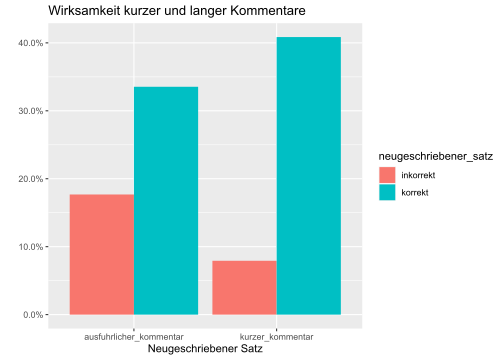
5.1.2 Plural von Kunstwörtern
5.1.2.2 Dateien laden
Für die Durchführung eines \(\chi^2\)-Tests solle eine Tabelle geladen werden, die Ergebnisse eines Experiments mit deutschen Kunstwörtern enthält, von denen slowenische Studierende der Germanistik den Plural bilden sollten.
# Branje datoteke je možno na več načinov
plural_subj1 = read.csv("data/plural_Subj_sum.csv", sep = ";")
plural_subj1 = read.csv2("data/plural_Subj_sum.csv")
plural_subj1 = read_csv2("data/plural_Subj_sum.csv")
# Pokaži prvih šest vrstic
head(plural_subj1) %>% knitr::kable()| SubjID | WordType | Genus | Sigstark | En | E | Er | S | Z |
|---|---|---|---|---|---|---|---|---|
| 1 | NoRhyme | Fem | 4.983333 | 8 | 4 | 0 | 0 | 0 |
| 1 | NoRhyme | Masc | 4.600000 | 6 | 6 | 0 | 0 | 0 |
| 1 | NoRhyme | Neut | 5.366667 | 10 | 2 | 0 | 0 | 0 |
| 1 | Rhyme | Fem | 3.836667 | 3 | 8 | 0 | 0 | 1 |
| 1 | Rhyme | Masc | 4.153333 | 5 | 5 | 1 | 0 | 1 |
| 1 | Rhyme | Neut | 3.784167 | 3 | 7 | 1 | 0 | 1 |
5.1.2.3 Datensatz-Aggregation und Test
Zuerst müssen wir die Rohdaten in eine Tabelle umformen, so dass ein \(\chi^2\)-Test durchgeführt werden kann. Eine derartige Transformation eines Datensatzes wird oft als Aggregation bezeichnet (also eine Art von Zusammenfassung). In der neu gebildeten 2x2-Tabelle sind die Beobachtungsdaten (d.h. die Häufigkeiten oder Frequenzen) zu finden. Das Programm berechnet für uns die erwarteten Häufigkeiten (theoretischen Frequenzen) und bewertet dann, ob die Differenz zwischen den Stichproben statistisch signifikant ist.
Die statistischen Annahmen können folgendermaßen formuliert werden:
- \(H_0\): Die Versuchspersonen verwenden sowohl für Reimwörter als auch für Nicht-Reimwörter dieselben deutschen Pluralmarker. Der Worttyp hat demnach keinen Einfluss auf die Auswahl des Pluralmarkers.
- \(H_1\): Die Versuchspersonen verwenden für Reimwörter nicht dieselben deutschen Pluralmarker wie für Nicht-Reimwörterverschieden für die beiden Worttypen (Reimwort vs. Nicht-Reimwort). Der Worttyp hat demnach Einfluss auf die Auswahl des Pluralmarkers.
Wenn der beim statistischen Test erhaltene p-Wert < 0,05 ist (d.h. bei einer Fehlerwahrscheinlichkeit von weniger als 5%), dann gilt die alternative Hypothese \(H_1\): die Differenz zwischen den beobachteten und den theoretisch erwarteten Häufigkeiten ist in diesem Fall statistisch signifikant, d.h. die Differenz ist nicht zufällig und bei 5% Fehlerwahrscheinlichkeit hinreichend groß.
Wenn der p-Wert jedoch p > 0,05 ist, dann wird die Nullhypothese \(H_0\) beibehalten. In diesem Fall wäre die Differenz nicht hinreichend groß und daher vermutlich zufällig entstanden (z.B. durch die geringe Größe der Stichproben oder die Auswahl der Stichprobendaten).
Im ersten statischen Test vergleichen wir die Häufigkeiten der Pluralmarker –e und –s miteinander.
# Povzemamo ("aggregate")
# Ergebnisse summieren
p = plural_subj1 %>%
group_by(WordType) %>%
summarise(Sigstark = mean(Sigstark),
En = sum(En), E = sum(E), Er = sum(Er),
S = sum(S), Z = sum(Z))
# izpis tabele
knitr::kable(p)| WordType | Sigstark | En | E | Er | S | Z |
|---|---|---|---|---|---|---|
| NoRhyme | 4.087337 | 1528 | 2169 | 302 | 307 | 26 |
| Rhyme | 3.916109 | 1425 | 2172 | 561 | 244 | 14 |
# Izberemo tri stolpce
q = p %>% select(WordType, E, S)
# Razlika med deleži množinskih pripon E in S (npr. Bal-e oder Bal-s)
chisq.test(q[,-1]) # prvi stolpec naj se ne upošteva, zato [, -1]##
## Pearson's Chi-squared test with Yates' continuity correction
##
## data: q[, -1]
## X-squared = 6.2424, df = 1, p-value = 0.012475.1.2.4 Naslednji preizkus(i)
Wir machen noch einen \(\chi^2\)-Test mit einer 2x2-Tabelle, und zwar mit den Pluralmarkern –e und –er durchgeführt.
# Izberemo tri stolpce za naslednji preizkus
q = p %>% select(WordType, E, Er)
# Razlika med deleži množinskih pripon E in Er (npr. Bal-e oder Bal-er)
chisq.test(q[,-1]) # prvi stolpec naj se ne upošteva, zato [, -1]##
## Pearson's Chi-squared test with Yates' continuity correction
##
## data: q[, -1]
## X-squared = 64.106, df = 1, p-value = 1.179e-155.1.2.5 Tabela 2 x 3
Der \(\chi^2\)-Test kann auch mit größeren Tabellen durchgeführt werden, z.B. mit einer 2x3-Tabelle. Dies ermöglicht den Vergleich von mehr als zwei Stichproben.
Der \(\chi^2\)-Test kann statistisch signifikante Unterschiede zwischen Stichproben melden, kann aber leider nicht darüber Auskunft oben, welche Stichprobe sich von den übrigen unterscheidet.
# Izberemo tri stolpce za naslednji preizkus
q = p %>% select(WordType, Er, E, S)
# Razlika med deleži množinskih pripon E in Er (npr. Bal-e oder Bal-er)
chisq.test(q[,-1]) # prvi stolpec naj se ne upošteva, zato [, -1]##
## Pearson's Chi-squared test
##
## data: q[, -1]
## X-squared = 78.148, df = 2, p-value < 2.2e-165.1.2.6 Zweite Version
Es gibt verschiedene Wege, um die Rohdaten in eine Tabelle umzuformen, die für die Durchführung eines \(\chi^2\)-Tests geeignet ist. Hier folgt eine weitere Aggregationsvariante mit Hilfe von tidyverse-Funktionen.
Zuerst gruppieren wir die Rohdaten nach der Spalte, in der die Versuchspersonen eingetragen sind. Dann lassen wir die Summe der ausgewählten Pluralmarker berechnen:
(p = plural_subj1 %>%
group_by(WordType) %>%
summarise(En = sum(En), E = sum (E))
)## # A tibble: 2 x 3
## WordType En E
## <chr> <dbl> <dbl>
## 1 NoRhyme 1528 2169
## 2 Rhyme 1425 2172Falls p < 0,05 ist, gilt \(H_1\) (die Stichproben unterscheiden sich). Falls p > 0,05 ist, gilt \(H_0\) (kein signifikanter Unterschied zwischen Stichproben).
(chi = chisq.test(p[,-1])
)##
## Pearson's Chi-squared test with Yates' continuity correction
##
## data: p[, -1]
## X-squared = 2.1535, df = 1, p-value = 0.1422Zum Schluss werfen wir noch einen Blick auf beobachtete und erwartete Häufigkeiten:
tabelle <- as_tibble(cbind(chi$observed, chi$expected)) %>%
# Spalte wieder hinzufügen
mutate(Wordtyp = unlist(p[,1])) %>%
# auf deutsch
mutate(Wordtyp = str_replace(Wordtyp, "NoRhyme", "Nicht-Reimwort"),
Wordtyp = str_replace(Wordtyp, "Rhyme", "Reimwort")) %>%
# erwartete Werte, wenn H0 richtig ist
rename(En_erwartet = V3, E_erwartet = V4) %>%
# Reihenfolge der Variablen verändern
select(Wordtyp, En, E, En_erwartet, E_erwartet)
tabelle %>% rmarkdown::paged_table()5.1.3 Modalkonstruktionen
In diesem Abschnitt wird die Vorkommenshäufigkeit (token frequency) der slowenischen Modalkonstruktionen morati + Infinitiv und biti + treba + Infinitiv in einer Auswahl von slowenischen Texten miteinander verglichen. Der statistische Vergleich wird mit dem \(\chi^2\)-Test durchgeführt.
5.1.3.2 Datei laden
Bei Recherchen auf dem slowenischen Gigafida-Portal wurden Gebrauchsfrequenzen (Tokenfrequenzen) von zwei Modalkonstruktionen ermittelt, und zwar:
- morati + Infinitiv und
- biti + treba + Infinitive.
Die erste Tabelle mit den Gebrauchsfrequenzen laden wir von der Festplatte:
naklonska <- read_xlsx("data/morati_treba.xlsx") %>%
clean_names()
naklonska## # A tibble: 2 x 3
## vrsta_besedila treba morati
## <chr> <dbl> <dbl>
## 1 Časniki 550572 1501540
## 2 Drugo 169349 530345Die zweite Tabelle zeigt die Distribution der beiden Modalkonstruktionen in fünf Funktionalstilen.
naklonska2 <- read_xlsx("data/morati_treba.xlsx",
sheet = "List2") %>% clean_names()
naklonska2## # A tibble: 5 x 3
## vrsta_besedila treba morati
## <chr> <dbl> <dbl>
## 1 Časopisi 389479 1086280
## 2 Revije 161093 415260
## 3 Internet 124996 376433
## 4 Stvarna besedila 30998 98981
## 5 Leposlovje 13355 54931Die Modalkonstruktion morati + Infinitiv wird ca. dreimal so häufig verwendet wie biti + treba + Infinitiv.
5.1.3.3 Graphische Darstellung
Die graphischen Darstellungen zeigen eher geringe Distributionsunterschiede.
naklonska %>%
pivot_longer(treba:morati, names_to = "konstruktion",
values_to = "freq") %>%
ggplot(aes(konstruktion, freq, fill = vrsta_besedila)) +
geom_col(position = "fill") +
scale_y_continuous(labels = percent_format()) +
labs(x = "Modalkonstruktion", y = "Gebrauchsfrequenz",
fill = "Vrsta besedila")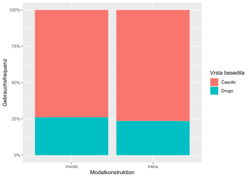
Die Modalkonstruktion morati + Infinitiv scheint in den alltagssprachlich näherstehenden Funktionalstilen Belletristik (leposlovje), Internet und Sachtexten (stvarna besedila) etwas häufiger belegt zu sein als die Modalkonstruktion biti + treba + Infinitiv, dafür aber in Zeitungen (Časopisi) etwas seltener.
naklonska2 %>%
pivot_longer(treba:morati, names_to = "konstruktion",
values_to = "freq") %>%
ggplot(aes(konstruktion, freq, fill = vrsta_besedila)) +
geom_col(position = "fill") +
scale_y_continuous(labels = percent_format()) +
labs(x = "Modalkonstruktion", y = "Gebrauchsfrequenz",
fill = "Vrsta besedila")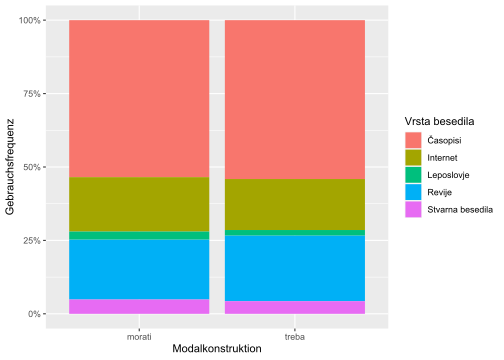
5.1.3.4 Chi-Quadrat-Test
Linguistische Annahme: Die Modalkonstruktion morati + Infinitiv ist weniger markiert (natürlicher) als die Modalkonstruktion biti + treba + Infinitiv.
Formale Begründung: Die erste Konstruktion ist kürzer und daher ökonomischer als die zweite.
Semantische Begründung: Die erste Konstruktion ist semantisch weniger spezifisch als die zweite.
Dies sollte dazu führen, dass die erste Konstruktion in einer größeren Anzahl von Kontexten erscheint als die zweite.
Die statistischen Annahmen lassen sich folgendermaßen formulieren:
\(H_0\): Die beiden Modalkonstruktionen kommen in denselben Funktionalstilen vor.
\(H_1\): Die beiden Modalkonstruktionen kommen nicht in denselben Funktionalstilen vor.
Der erste \(\chi^2\)-Test zeigt, dass die beiden Stichproben (morati vs. treba) unabhängig voneinander sind. Dies bestätigt der geringe p-Wert (p < 0,001), der unterhalb dem Grenzwert von p = 0,05 (5%) liegt. Damit können wir die Nullhypothese (\(H_0\)) verwerfen und die alternative Hypothese (\(H_1\)) akzeptieren. Die beiden Modalkonstruktionen kommen demnach nicht im gleichen Maße in denselben Funktionalstilen vor.
chisq.test(naklonska[ , -1])##
## Pearson's Chi-squared test with Yates' continuity correction
##
## data: naklonska[, -1]
## X-squared = 1862.9, df = 1, p-value < 2.2e-16Der zweite \(@chi³2\)-Test, der mit den Zahlenwerten der zweiten Tabelle durchgeführt wird, bestätigt Hypothese \(H_1\). Die Distribution der beiden Modalkonstruktionen unterscheidet sich. Die graphische Darstellung deutet an, dass dies vor allem am vergleichsweise selteneren Gebrauch der (natürlicheren) Modalkonstruktion morati + Infinitiv in publizistischen Texten liegen könnte. Nach unser Annahme wird die (weniger natürliche) Modalkonstruktion biti + treba + Infinitiv häufiger in weniger natürlichen Textsorten mit dem Merkmal [+Distanz] eingesetzt.
chisq.test(naklonska2[ , -1])##
## Pearson's Chi-squared test
##
## data: naklonska2[, -1]
## X-squared = 3292, df = 4, p-value < 2.2e-165.2 Intervallskalierte Größen
Statistische Tests:
t-Test,
lineare Regression,
lineare Regression mit gemischten Effekten.
5.2.1 Äußerungslänge in einer Kurzgeschichte
Im Wikipedia-Artikel zum Thema Satzlänge (nach unserer Terminologie: Äußerungslänge) wird angegeben, dass die durchschnittliche Satzlänge in Prosatexten für literarische Prosa im 20. Jahrhundert gemäß Best(2002) zwischen 7,08 und 19,62 Wörtern liegt.
5.2.1.1 Programme und Tabelle laden
library(tidyverse)
library(scales)
library(janitor)
library(readxl)
wiki_utter_length <-
read_xlsx("data/wikipedia_satzlaenge_durchschnitt.xlsx")
wiki_utter_length %>% rmarkdown::paged_table()Roman-Dialoge weisen laut Pieper(1979) einen Medianwert von 6,01 Wörtern auf, Roman-Nichtdialoge dagegen einen Medianwert von 12,98 Wörtern. Der Median ist ein Mittelwert, der genau in der Mitte aller Werte liegt: 50% aller Werte liegen unterhalb des Medians, 50% oberhalb davon.
wiki_utter_length_median <-
read_xlsx("data/wikipedia_satzlaenge_median.xlsx")
wiki_utter_length_median %>% rmarkdown::paged_table()5.2.1.2 Hypothesen für den t-Test
Aufgrund der in den beiden Tabellen vorgestellten Mittelwerte gehen wir im Fall von Borcherts Kurzgeschichte Die Küchenuhr von der folgende Nullhypothese (\(H_0\)) aus:
Die durchschnittliche Äußerungslänge beträgt so wie in literarischer Prosa etwa \(\mu\) = 12 Wörter pro Äußerung. Die Kurzgeschichte ist ein Beispiel für literarische Prosa, in der auch Dialoge vorkommen.
Die Alternativhypothese (\(H_1\)) besagt dagegen, dass das arithmetische Mittel (der Durchschnittswert) in Borcherts Kurzgeschichte von dem erwarteten Durchschnitt für literarische Prosa (mit Dialog- und Nicht-Dialog-Passagen) \(\mu\) abweicht.
Der t-Test wird auf folgende Weise berechnet:
\[
t = \frac{m - \mu}{s/{\sqrt{n}}}
\]
- m ist der arithmetische Mittelwert der Stichprobe;
- \(\mu\) ist der arithmetische Mittelwert für literarische Prosa;
- n ist die Stichprobengröße (d.h. die Anzahl der Äußerungen);
- s ist die Standardabweichung mit \(n - 1\) Freiheitsgraden. Da wir die Standardabweichung in der Grundgesamtheit \(\sigma\) nicht kennen, sind wir bei diesem t-Test mit einer Stichprobe auf die Standardabweichung der Stichprobe \(s\) (d.h. einer Zufallsvariable) angewiesen.
Der t-Wert und der p-Wert werden bei df = \(n - 1\) Freiheitsgraden berechnet. Falls der p-Wert < 0,05, verwerfen wir die Nullhypothese, liegt er dagegen oberhalb dieses Signifikanzniveaus, behalten wir die Nullhypothese bei.
5.2.1.3 Textvorbereitung
Zuerst muss der Text geöffnet und dann in Äußerungen zerlegt werden. Dann kann quanteda die Anzahl der Tokens (d.h. Wörter + Interpunktionszeichen) zählen. Die Interpunktionszeichen werden hier der Einfachheit halber nicht herausgefiltert, so dass die ermittelten Zahlen etwas höher ausfallen. Für die Durchführung eines t-Test erstellen wir einen Datensatz, in dem die Wortanzahl (Tokenanzahl) für jede Äußerung auftritt.
library(quanteda)
library(quanteda.textstats)
# open the text file
borchert_kuechenuhr <- read_lines(
"data/borchert/borchert_kuechenuhr.txt")
# create corpus
borchert_corp_basic <- corpus (borchert_kuechenuhr)
# corpus reshaped by utterances
borchert_corp_utter <- corpus_reshape(borchert_corp_basic,
to = "sentences")
# create a dataframe
borchert_df <- as.character(borchert_corp_utter) %>%
as.data.frame() %>%
rename(text = ".") %>%
rownames_to_column(., var = "doc_id")
# mandatory for t-test: count tokens per utterance
borchert_textstats <- summary(borchert_corp_utter, n = 130) %>%
rename(doc_id = Text)
# join both datasets
borchert_df_all <- left_join(borchert_df, borchert_textstats,
by = "doc_id") %>%
filter(Tokens > 0)
# remove title and author from dataframe
# 109 sentences remain
borchert_df_all <- borchert_df_all %>%
filter(doc_id != "text1.1")5.2.1.4 Durchführung des t-Tests
Nun führen wir den Ein-Stichproben t-Test durch. Dazu genügt der Datensatz borchert_textstats.
# install.packages("ggpubr")
library(ggpubr)
# remove 0 values and title
borchert_textstats <- borchert_textstats %>%
filter(Tokens > 0, doc_id != "text1.1")
# test
t.test(borchert_textstats$Tokens, mu = 12, alternative = "two.sided")##
## One Sample t-test
##
## data: borchert_textstats$Tokens
## t = -3.5698, df = 108, p-value = 0.0005346
## alternative hypothesis: true mean is not equal to 12
## 95 percent confidence interval:
## 9.288998 11.224764
## sample estimates:
## mean of x
## 10.25688Das Ergebnis: Die durchschnittliche Äußerungslänge in Borcherts Kurzgeschichte (mean = 9,25 Wörter pro Äußerung) unterscheidet sich signifikant vom erwarteten arithmetischen Mittelwert für literarische Prosa \(\mu\) = 12 Wörter.
Der folgende t-Test wird mit dem vollständigen Datensatz borchert_df_all durchgeführt, aber dieses Mal mit der Nullhypothese, dass der Mittelwert m der Stichprobe gleich dem Mittelwert \(\mu\) = 7,08 beträgt (d.h. der Untergrenze der Äußerungslänge literarischer Prosa).
# install.packages("ggpubr")
library(ggpubr)
t.test(borchert_df_all$Tokens, mu = 7.08, alternative = "two.sided")##
## One Sample t-test
##
## data: borchert_df_all$Tokens
## t = 6.5061, df = 108, p-value = 2.48e-09
## alternative hypothesis: true mean is not equal to 7.08
## 95 percent confidence interval:
## 9.288998 11.224764
## sample estimates:
## mean of x
## 10.25688Die durchschnittliche Äußerungslänge in Borcherts Kurzgeschichte unterscheidet sich demnach mit statistischer Signifikanz sowohl vom angenommenen Mittelwert \(\mu\) = 12 Wörter für literarische Prosa als auch von der Untergrenze \(\mu\) = 7,08 Wörter.
Der schwarze Balken im Boxplot zeigt den Medianwert unserer Stichprobe (median = 9 Wlrter bzw. genauer: Tokens), der nur knapp unter dem arithmetischen Mittelwert liegt (mean = 9,29 Tokens). Die gestrichelten blauen Linien kennzeichnen die Ober- und Untergrenze der durchschnittlichen Äußerungslängen für literarische Prosa (s. Wikipedia-Tabelle oben). Genau 50% aller Äußerungslängen aus Borcherts Kurzgeschichte liegen im blauen Kasten.
borchert_df_all %>%
ggplot(aes(y = Tokens)) +
geom_boxplot(fill = "cyan") +
geom_hline(yintercept = 19.62, color = "blue", lty = 3, size = 2) +
geom_hline(yintercept = 7.08, color = "blue",
linetype = "dotted", size = 2)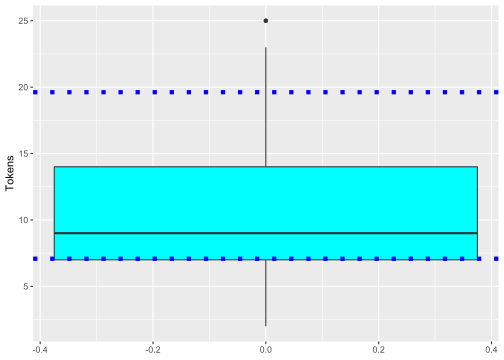
5.2.2 Wirkung von Unterrichtsmethoden
Welche Wirkung haben zwei verschiedene Unterrichtsmethoden auf die Ergebnisse von Sprachtests? Welche Gruppe von Studierenden erreichte eine höhere Punktzahl beim Test?
Diese Frage soll mit Hilfe eines t-Tests für zwei unabhängige Stichproben geprüft werden.
5.2.2.1 Data
# Two teaching methods and the scores in a language test.
metode <- read.csv("data/ttest2a.csv", dec=",")
attach(metode)
head(metode)## Testpersonen Resultat Methode
## 1 1 23 A
## 2 2 34 A
## 3 3 54 A
## 4 4 33 A
## 5 5 26 A
## 6 6 27 A5.2.2.2 Deskriptive Statistik
Arithmetische Mittelwerte beider Studentengruppen (Average scores of students):
tapply(Resultat, list(Methode), mean)## A B
## 32.65 31.55Standardabweichungen in beiden Studentengruppen (Standard deviations of averages):
tapply(Resultat, list(Methode), sd)## A B
## 9.906271 7.897201Graphische Darstellung
barplot(tapply(Resultat, list(Methode), mean), col=c(3:2))Flexiblere Gestaltung mit dem Programm ggplot2.
metode %>%
ggplot(aes(Methode, Resultat, fill = Methode)) +
geom_boxplot() +
geom_jitter(width = 0.1) +
theme(legend.position = "none")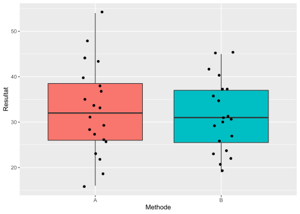
5.2.2.3 Zwei-Stichproben t- Test
In diesem t-Test werden zwei die arithmetischen Mittelwerte von zwei Stichproben verglichen, die unabhängig voneinander sind. Eine Studentengruppe hatten Unterricht gemäß Methode A, die andere gemäß Methode B. Ist das durchschnittliche Ergebnis beider Gruppen gleich oder unterschiedlich?
Nullhypothese \(H_0\): Die Ergebnisse beider Methoden unterscheiden sich nicht signifikant.
Alternativhypothese \(H_1\): Die Ergebnisse beider Mehtoden unterscheiden sich signifikant.
# Do the means of the two samples differ significantly?
# Hypothesis H0: they don't (if p > 0.05.
# Hypothesis H1: they do (if p < 0.05.
t.test(Resultat ~ Methode, data=metode, paired = F, var.equal = T)##
## Two Sample t-test
##
## data: Resultat by Methode
## t = 0.3883, df = 38, p-value = 0.7
## alternative hypothesis: true difference in means between group A and group B is not equal to 0
## 95 percent confidence interval:
## -4.634791 6.834791
## sample estimates:
## mean in group A mean in group B
## 32.65 31.55Ergebnis des t-Tests: In unserem erfundenen Datensatz wird die Nullhypothese angenommen. Zwischen den Ergebnissen nach Methode A und B gab es keinen signifikanten Unterschied. Der p-Wert lag mit p = 0,7 oberhalb dem Signifikanzniveau von p = 0,05.
Der t-test erfordert normalverteilte Daten. Ob Normalverteilung vorliegt, kann man
- mit dem shapiro-Test oder
- (meist zuverlässiger) mit Hilfe eines Histrogramms überprüfen.
Die arithmetischen Mittelwert der Gruppe A sind gemäß dem Shapiro-Wilks-Test normalverteilt, denn p > 0,05. Bei einem p-Wert von weniger als 0,05 müssten wir die Nullhypothese, dass die Variable normalverteilt ist, verwerfen.
metode %>%
filter(Methode == "A") %>%
select(Resultat) %>%
pull() %>%
shapiro.test()##
## Shapiro-Wilk normality test
##
## data: .
## W = 0.98368, p-value = 0.9723Die arithmetischen Mittelwert der Gruppe B sind gemäß dem Shapiro-Wilks-Test ebenfalls normalverteilt, denn p > 0,05.
metode %>%
filter(Methode == "B") %>%
select(Resultat) %>%
pull() %>%
shapiro.test()##
## Shapiro-Wilk normality test
##
## data: .
## W = 0.96007, p-value = 0.5452Die beiden Dichte-Diagramme (oder Histogramme) bestätigen den Befund des Shapiro-Wilks-Tests, dass die Variable Resultat in beiden Gruppen (A und B) in etwa normalverteilt sind. Das ist eine der Voraussetzungen für die Durchführung des t-Tests.
metode %>%
filter(Methode == "A") %>%
ggplot(aes(Resultat)) +
geom_density() +
geom_vline(xintercept = 31) # median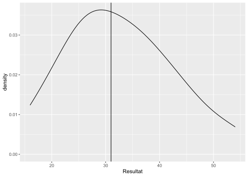
metode %>%
filter(Methode == "B") %>%
ggplot(aes(Resultat)) +
geom_density() +
geom_vline(xintercept = 31) # median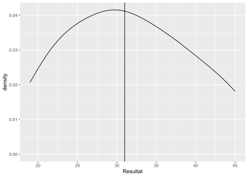
Stellt man nun fest, dass die geprüfte Variable nicht normalverteilt ist, kann man auf nicht-parametrische Tests zurückgreifen, z.B. den Mann-Whitney-Wilcoxon-Test (auch: Mann-Whitney U-Test, Wilcoxon Rangsummentest) für zwei abhängige Stichproben (paired = TRUE) bzw. für zwei unabhängige Stichproben (paired = FALSE.
5.2.2.4 Vergleich von Medianwerten
Für den Vergleich von Medianwerten von nicht-normal verteilten Daten kann man den nicht-parametrischen wilcox.test() Nonparametric statistics verwenden, bei dem die Rangzahlen von zwei Stichproben addiert und verglichen werden (in unserem Beispiel: Resultate der Methode A und B).
In Fall unserer erfundenen Stichproben (zwei Studentengruppen, die sich durch die Unterrichtsmethode unterscheiden), ist der p-Wert p = 1, also oberhalb des Signifikanzniveaus von p = 0,05. Die Alternativhypothese konnte nicht bestätigt werden. Wir akzeptieren die Nullhypothese, dass zwischen den Ergebnissen der beiden Unterrichtsmethoden kein signifikanter Unterschied vorliegt.
# create two separated datasets
metodeA <- subset(metode, Methode = "A")
metodeB <- subset(metode, Methode = "B")
# both median values are equal
median(metodeA$Resultat)## [1] 31median(metodeB$Resultat)## [1] 31# wilcox.test
wtest <- wilcox.test(metodeA$Resultat, metodeB$Resultat, paired=FALSE)
wtest##
## Wilcoxon rank sum test with continuity correction
##
## data: metodeA$Resultat and metodeB$Resultat
## W = 800, p-value = 1
## alternative hypothesis: true location shift is not equal to 0Mit der summary()-Funktion können wir den Medianwert, den Minimal- und Maximalwert sowie den interquartilen Bereich der Variable unseres erfundenen Datensatzes ausgeben lassen.
summary(metodeA$Resultat)## Min. 1st Qu. Median Mean 3rd Qu. Max.
## 16.00 26.00 31.00 32.10 37.25 54.00summary(metodeB$Resultat)## Min. 1st Qu. Median Mean 3rd Qu. Max.
## 16.00 26.00 31.00 32.10 37.25 54.005.2.2.5 Effektstärke
5.2.2.5.1 Nicht-parametrisch
Der Wilcoxon-Rangsummentest (Mann-Whitney U-Test) hat zwar keinen signifikanten Unterschied angezeigt, aber man Cohen’s Effektstärke (Cohen 1992) nach einem nicht-parametrischen Mann-Whitney-Wilcoxon Test folgendermaßen berechnen lassen:
\[ r = \frac{z}{\sqrt{n}} \]
Die Variable r ist Pearsons Korrelationskoeffizient (Pearson product-moment correlation), der die Assoziationsstärke (d.h. die Stärke des linearen Zusammenhangs) zwischen zwei Variablen angibt. Ein Z-Score z beschreibt das Verhältnis eines Wertes zum Mittelwert einer Gruppe von Werten. Der Z-Score wird in Form von Standardabweichungen vom Mittelwert gemessen. Die Variable n steht für die Stichprobengröße.
wil <- wilcox.test(Resultat ~ Methode,
paired = FALSE, exact = FALSE, data = metode)
z <- qnorm(wil$p.value)
r <- z/sqrt(length(metode$Resultat))
r## [1] 0.1434898Die Effektstärke für den Korrelationswert r = 0,14 (maximal r = 1) wird gemäß (Cohen1992power?) als schwache Effektstärke eingeschätzt (ab r = 0,3 moderate Effektstärke, ab r = 0,5 große Effektstärke). Der Unterschied zwischen den beiden Gruppen ist demnach nicht unbedingt zu vernachlässigen, da der (oben berechnete) nicht-signifikante p-Wert möglicherweise wegen einer zu kleinen Stichprobengröße zustande gekommen ist.
5.2.2.5.2 Parametrisch
Die Effektstärke d kann man aus dem Unterschied zwischen den Mittelwerten, dividiert durch die gepaarte Standardabweichung sd (pooled standard deviation, berechnen:
- d ist Cohens Effektstärke (effect size);
- \(means_1\), \(means_2\) sind die beiden Mittelwerte,
- \(s_1\), \(s_2\) die Standardabweichungen;
- \(n_1\), \(n_2\) die Größen der beiden Stichproben.
\[ d = \frac{mean_1 - mean_2}{\sqrt{(n_1-1)s_1^2 + (n_2-1)s_2^2}/{(n_1+n_2-2)}} \]
Am schnellsten berechnet man die Effektstärke d wohl mit dem Programm effectsize.
library(effectsize)
coh <- cohens_d(Resultat ~ Methode, data = metode)
coh## Cohen's d | 95% CI
## -------------------------
## 0.12 | [-0.50, 0.74]
##
## - Estimated using pooled SD.Die geschätzte Effekstärke (d.h. der geschätzte Unterschied zwischen den beiden Gruppen in unserer Stichprobe) beträgt etwa d = 0,12 (ab d = 0,2 gilt meist: schwacher Effekt). Cohen’s d sagt uns, wie viele Standardabweichungen zwischen den beiden Mittelwerten liegen.
Manuelle Berechnung:
test <- t.test(Resultat ~ Methode, var.equal = T, data = metode)
# means
mean1 = as.numeric(test$estimate[1])
mean2 = as.numeric(test$estimate[2])
#find sample standard deviation of each sample
s1 <- sd(metode$Resultat[metode$Method == "A"])
s2 <- sd(metode$Resultat[metode$Method == "B"])
#find sample size of each sample
n1 <- length(metode$Resultat[metode$Method == "A"])
n2 <- length(metode$Resultat[metode$Method == "B"])
#calculate pooled standard deviation
pooled_sd <- sqrt(((n1-1)*s1^2 + (n2-1)*s2^2) / (n1+n1-2))
d = (mean1 - mean2)/pooled_sd
d## [1] 0.122792Teilweise manuelle Berechung, aber Berechnung der gepaarten Standardabweichung mit Hilfe des Programms effectsize:
library(effectsize)
pooled_sd <- sd_pooled(metode$Resultat[metode$Methode == "A"],
metode$Resultat[metode$Methode == "B"])
mean1 = mean(metode$Resultat[metode$Methode == "A"])
mean2 = mean(metode$Resultat[metode$Methode == "B"])
d = (mean1 - mean2)/pooled_sd
d## [1] 0.1227925.2.2.6 Lineare Regression
Statt des t-Tests kann man bei Mittelwert-Vergleichen auch eine lineare Regression durchführen. Da wir es in diesem Fall mit nur einem Prädiktor (Methode) zu tun haben, sind die Ergebnisse der linearen Regression (etwa der p-Wert) gleich denen, die uns der t-Test gebracht hat. Darüber hinaus erhalten wir noch andere Informationen und erweitern Vergleichsmöglichkeiten.
# Check the same hypotheses with the linear regression method
# Since there is only one predictor ("Methode"), we obtain the same result as with the t-test.
# Since p > 0.05, the score means of the two methods do not differ significantly.
m <- lm(Resultat ~ Methode, data=metode)
summary(m)##
## Call:
## lm(formula = Resultat ~ Methode, data = metode)
##
## Residuals:
## Min 1Q Median 3Q Max
## -16.65 -6.65 -0.55 5.45 21.35
##
## Coefficients:
## Estimate Std. Error t value Pr(>|t|)
## (Intercept) 32.650 2.003 16.300 <2e-16 ***
## MethodeB -1.100 2.833 -0.388 0.7
## ---
## Signif. codes: 0 '***' 0.001 '**' 0.01 '*' 0.05 '.' 0.1 ' ' 1
##
## Residual standard error: 8.958 on 38 degrees of freedom
## Multiple R-squared: 0.003952, Adjusted R-squared: -0.02226
## F-statistic: 0.1508 on 1 and 38 DF, p-value: 0.7library(effects)Predicted scores
allEffects(m)## model: Resultat ~ Methode
##
## Methode effect
## Methode
## A B
## 32.65 31.55Das Diagramm zeigt deutlich, dass kein signifikanter Unterschied zwischen den Mittelwerten der Methoden A und B vorliegt: Die Konfidenzintervalle für beide arithmetische Mittelwerte überschneidet sich fast völlig und schließen damit den jeweiligen Mittelwert der anderen Methode ein.
plot(allEffects(m), multiline=TRUE, grid=TRUE,
rug=FALSE, as.table=TRUE)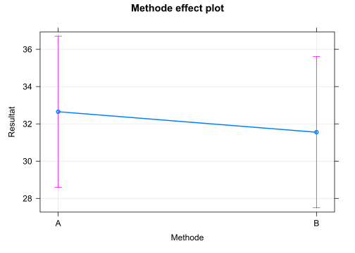
Zum Abschluss dieses Kapitels:
Zur unkomplizierten Visualisierung von Datensatzvariablen, ohne programmieren zu müssen, eignet sich die library(esquisse). Das Programm ermöglicht die Auswahl von Variablen mit der Maus.
5.2.3 Höflichkeit und Grundfrequenz
library(tidyverse)
library(scales)
# detach("package:rlang", unload=TRUE)Datensatz von: Bodo Winter (Winter and Grawunder 2012; Winter 2013)
Thema: Politeness and Pitch (F0)
Tutorials:
- Lineare Regression
- Lineare Regression mit gemischten Effekten
Artikel:
The phonetic profile of Korean formal and informal speech registers
Gliederung unserer quantitativen Analyse
1. Laden der Datei
2. Kennenlernen der Daten und Säubern
3. Hypothesen
4. Test und Ergebnisse
5. Schluss
Eine einfache lineare Regression oder einen t-Test kann man auch in Excel berechnen, aber in Statistikprogrammen ist das bequemer.
5.2.3.1 Datei laden
# politeness <- read.csv("/cloud/project/data/politeness_data.csv")
politeness <- read.csv("data/politeness_data.csv")5.2.3.2 Kennenlernen der Daten und Säubern
Welche Variablen enthält die Datei?
head(politeness)## subject gender scenario attitude frequency
## 1 F1 F 1 pol 213.3
## 2 F1 F 1 inf 204.5
## 3 F1 F 2 pol 285.1
## 4 F1 F 2 inf 259.7
## 5 F1 F 3 pol 203.9
## 6 F1 F 3 inf 286.9Eine weitere Funktion, um die Datenstruktur zu betrachten:
glimpse(politeness)## Rows: 84
## Columns: 5
## $ subject <chr> "F1", "F1", "F1", "F1", "F1", "F1", "F1", "F1", "F1", "F1", ~
## $ gender <chr> "F", "F", "F", "F", "F", "F", "F", "F", "F", "F", "F", "F", ~
## $ scenario <int> 1, 1, 2, 2, 3, 3, 4, 4, 5, 5, 6, 6, 7, 7, 1, 1, 2, 2, 3, 3, ~
## $ attitude <chr> "pol", "inf", "pol", "inf", "pol", "inf", "pol", "inf", "pol~
## $ frequency <dbl> 213.3, 204.5, 285.1, 259.7, 203.9, 286.9, 250.8, 276.8, 231.~Und noch eine Übersicht, die uns noch mehr zeigt, z.B. ob bestimmte Datenzellen leer sind (NA). Die Variable frequency enthält eine leere Datenzelle (s. n_missing). Das müssen wir bei der Berechnung des Durchschnitts berücksichtigen.
library(skimr)
skim(politeness)| Name | politeness |
| Number of rows | 84 |
| Number of columns | 5 |
| _______________________ | |
| Column type frequency: | |
| character | 3 |
| numeric | 2 |
| ________________________ | |
| Group variables | None |
Variable type: character
| skim_variable | n_missing | complete_rate | min | max | empty | n_unique | whitespace |
|---|---|---|---|---|---|---|---|
| subject | 0 | 1 | 2 | 2 | 0 | 6 | 0 |
| gender | 0 | 1 | 1 | 1 | 0 | 2 | 0 |
| attitude | 0 | 1 | 3 | 3 | 0 | 2 | 0 |
Variable type: numeric
| skim_variable | n_missing | complete_rate | mean | sd | p0 | p25 | p50 | p75 | p100 | hist |
|---|---|---|---|---|---|---|---|---|---|---|
| scenario | 0 | 1.00 | 4.00 | 2.01 | 1.0 | 2.00 | 4.0 | 6.00 | 7.0 | <U+2587><U+2583><U+2583><U+2583><U+2587> |
| frequency | 1 | 0.99 | 193.58 | 65.54 | 82.2 | 131.55 | 203.9 | 248.55 | 306.8 | <U+2587><U+2585><U+2585><U+2587><U+2586> |
Am Experiment nahmen 6 Versuchspersonen teil (F1, …, M7). Von jeder Versuchsperson (subject) haben wir 14 Messpunkte (n = 14).
politeness %>%
count(subject)## subject n
## 1 F1 14
## 2 F2 14
## 3 F3 14
## 4 M3 14
## 5 M4 14
## 6 M7 14Versuchspersonen: 3 weibliche und 3 männliche.
politeness %>%
count(subject, gender)## subject gender n
## 1 F1 F 14
## 2 F2 F 14
## 3 F3 F 14
## 4 M3 M 14
## 5 M4 M 14
## 6 M7 M 14Pro Verhaltensweise (attitude) stehen uns 42 Messpunkte zur Verfügung, um unsere (unten folgende) Hypothese zu überprüfen.
politeness %>%
count(attitude)## attitude n
## 1 inf 42
## 2 pol 42Berechnen wir mal die Grundfrequenz!
politeness %>%
mean(frequency)## [1] NANA: Hoppla! In unserer Datenreihe fehlt eine Frequenz. In solch einem Fall haben wir zwei Möglichkeiten: entweder entfernen wir diese Datenzeile aus unserer Berechnung oder wir lassen unser Programm eine Schätzung des Wertes vornehmen, die aber an der Datendistribution und am Mittelwert nichts verändert. Letzteres machen wir mit einer impute-Funktion, die beispielsweise den Medianwert für den fehlend Datenpunkt einsetzt.
Entfernen der leeren Datenzelle (NA) ist die einfachste Lösung, um die durchschnittliche Frequenz mit mean() berechnen zu können. Das erledigen wir mit der tidyverse-Funktion drop_na().
politeness %>%
drop_na(frequency) %>%
summarise(av_freq = mean(frequency))## av_freq
## 1 193.5819Eine andere Möglichkeit, eine leere Datenzeile aus der Mittelwertberechnung zu entfernen, ist die Option na.rm = TRUE zur mean()-Funktion hinzuzufügen.
politeness %>%
summarise(av_freq = mean(frequency, na.rm = TRUE))## av_freq
## 1 193.5819Wir haben gerade die Durchschnittsfrequenz für alle Versuchspersonen berechnet. Berechnen wir sie nun getrennt nach weiblichen und männlichen Versuchspersonen! Zu diesem Zweck müssen wir vor der Mittelwertberechnung die Daten mit der group_by()-Funktion gruppieren.
politeness %>%
drop_na(frequency) %>%
group_by(gender) %>%
summarise(av_freq = mean(frequency))## # A tibble: 2 x 2
## gender av_freq
## <chr> <dbl>
## 1 F 247.
## 2 M 139.Erwartungsgemäß ist der Durchschnittswert bei Frauen höher als bei Männern: Frauen haben ja meist eine höhere Stimme als Männer.
Ein Blick auf die Durchschnittsfrequenzen bei höflicher und informeller Sprechweise: In unserer Stichprobe mit 6 Versuchspersonen (je 14 Frequenzmessungen) zeigt sich ein Unterschied von etwa 18,2 Hz, und zwar 202,59 - 184,36. Um zu diesem Ergebnis zu gelangen, haben wir vor der summarise()-Funktion die group_by()-Funktion entsprechend angewandt.
politeness %>%
drop_na() %>%
group_by(attitude) %>%
summarise(avg_freq = mean(frequency),
sd_freq = sd(frequency))## # A tibble: 2 x 3
## attitude avg_freq sd_freq
## <chr> <dbl> <dbl>
## 1 inf 203. 66.9
## 2 pol 184. 63.6# politeness %>%
# drop_na %>%
# transmute(attitude, frequency) %>%
# mutate(attitude = str_replace(attitude, "pol", "1"),
# attitude = str_replace(attitude, "inf", "0")) %>%
# mutate(attitude = parse_number(attitude))5.2.3.3 Hypothesen
\(H_0\): Der durchschnittliche Grundfrequenzverlauf (F0) bei höflichem oder informellem Sprechverhalten (attitude) ist gleich.
\(H_1\): Der durchschnittliche Grundfrequenzverlauf (F0) bei höflichem Sprechverhalten unterscheidet sich vom informellen.
Nach unserem bisherigen Wissen erwarten wir, dass unsere Daten die Hypothese \(H_1\) bestätigen werden.
Das überprüfen wir zunächst mit einem t-Test, anschließend mit einer linearen Regression.
5.2.3.4 t-Test
Zunächst ein Blick auf die Durchschnittsfrequenzen bei höflicher und informeller Sprechweise. In unserer Stichprobe mit 6 Versuchspersonen (je 14 Frequenzmessungen) zeigt sich ein Unterschied von etwa 18,2 Hz.
Gemäß Hypothese \(H_1\) ist der Unterschied nicht zufällig entstanden, sondern kann auf die Gesamtpopulation der Sprecher verallgemeinert werden.
Nicht so gemäß Hypothese \(H_0\): Der Mittelwertunterschied zwischen den Stichproben kann zufällig entstanden sein, denn wenn wir eine andere Stichprobe genommen hätten, wäre der Unterschied vielleicht gleich Null gewesen.
Mit statistischen Tests können wir diese beiden Hypothesen überprüfen. Einer davon ist der t-Test.
politeness %>%
drop_na() %>%
group_by(attitude) %>%
summarise(avg_freq = mean(frequency),
sd_freq = sd(frequency))## # A tibble: 2 x 3
## attitude avg_freq sd_freq
## <chr> <dbl> <dbl>
## 1 inf 203. 66.9
## 2 pol 184. 63.6Die Varianzen und damit auch die Standardabweichungen (sd_freq) vom Mittelwert (avg_freq) sind in beiden Gruppen (inf und pol) ungefähr gleich groß. Beim t-Test können wir dies berücksichtigen, und zwar mit der Option var.equal = TRUE. Die Option paired = FALSE besagt, dass die beiden Gruppen unabhängig vom Messzeitpunkt sind.
Der t-Test bestätigt \(H_1\) nicht (p > 0,05):
t.test(frequency ~ attitude, data = politeness,
paired = FALSE, var.equal = TRUE)##
## Two Sample t-test
##
## data: frequency by attitude
## t = 1.2718, df = 81, p-value = 0.2071
## alternative hypothesis: true difference in means between group inf and group pol is not equal to 0
## 95 percent confidence interval:
## -10.29058 46.75458
## sample estimates:
## mean in group inf mean in group pol
## 202.5881 184.3561Eine weitere Form, wie man den t-Test durchführen könnte. In den eckigen Klammern wird eine Bedingung oder Filter formuliert.
# frequencies if polite
pol = politeness$frequency[politeness$attitude == "pol"]
# frequencies if informal
inf = politeness$frequency[politeness$attitude == "inf"]
t.test(pol, inf, var.equal = TRUE)##
## Two Sample t-test
##
## data: pol and inf
## t = -1.2718, df = 81, p-value = 0.2071
## alternative hypothesis: true difference in means is not equal to 0
## 95 percent confidence interval:
## -46.75458 10.29058
## sample estimates:
## mean of x mean of y
## 184.3561 202.5881Oder eine dritte (längere) Variante, den t-Test durchzuführen:
polite <- politeness %>%
select(attitude, frequency) %>%
filter(attitude == "pol") %>%
select(-attitude)
informal <- politeness %>%
select(attitude, frequency) %>%
filter(attitude == "inf") %>%
select(-attitude)
t.test(polite, informal, var.equal = TRUE)##
## Two Sample t-test
##
## data: polite and informal
## t = -1.2718, df = 81, p-value = 0.2071
## alternative hypothesis: true difference in means is not equal to 0
## 95 percent confidence interval:
## -46.75458 10.29058
## sample estimates:
## mean of x mean of y
## 184.3561 202.5881Wenn man die Option var.equal = TRUE nicht angibt, wird der Welch-t-Test durchgeführt, d.h. das Programm geht davon aus, dass die Varianzen (bzw. Standardabweichungen) der beiden Gruppen sich signifikant unterscheiden.
5.2.3.5 Lineare Regression
Mit dem t-Test konnten wir immer nur die Wirkung einer Variablen (z.B. attitude) auf den Frequenzverlauf prüfen. Mit einem linearen Regressionsmodell können wir dagegen die gleichzeitige Wirkung mehrerer Größen auf den Frequenzverlauf herausfinden. Eine lineare Regression hat den großen Vorteil, dass man mehr als eine unabhängige Variable (Prädiktor) verwenden kann, um eine Hypothese zu testen.
Wir wählen Geschlecht (gender) und Sprechverhalten (attitude) als unabhängige Variablen, der Grundfrequenzverlauf (frequency) als abhängige Variable.
Die grundlegende Formulierung des Programmcodes (für eventuelle Vergleiche mit anderen Modellversionen haben wir dem Modell auch den neuen Namen “m1” gegeben):
m <- lm(frequency ~ gender + attitude, data = politeness)
m1 <- m
summary(m)##
## Call:
## lm(formula = frequency ~ gender + attitude, data = politeness)
##
## Residuals:
## Min 1Q Median 3Q Max
## -82.409 -26.561 -4.262 24.690 100.140
##
## Coefficients:
## Estimate Std. Error t value Pr(>|t|)
## (Intercept) 256.762 6.756 38.006 <2e-16 ***
## genderM -108.349 7.833 -13.832 <2e-16 ***
## attitudepol -19.553 7.833 -2.496 0.0146 *
## ---
## Signif. codes: 0 '***' 0.001 '**' 0.01 '*' 0.05 '.' 0.1 ' ' 1
##
## Residual standard error: 35.68 on 80 degrees of freedom
## (1 observation deleted due to missingness)
## Multiple R-squared: 0.7109, Adjusted R-squared: 0.7037
## F-statistic: 98.38 on 2 and 80 DF, p-value: < 2.2e-16Wie liest man die Regressionsergebnisse?2
Beginnen wir am Ende! Die F-Statistik am Ende besagt, dass das Regressionsmodell insgesamt gesehen einen signifikanten Beitrag zur Erklärung des Frequenzverlaufs leistet, denn der sehr kleine p-Wert (p-value: < 2.2e-16) liegt deutlich unter dem 5% Signifikanzniveau.
Die vorletzte Zeile gibt den \(R^2\)-Wert (Bestimmtheitsmaß) an, also wie viel Prozent der gesamten Varianz der abhängigen Variable (frequency) vom Modell erklärt wird (hier: 0,71, demnach 71 % bzw. mit adjusted \(R^2\) mehr als 70%, wenn die Korrektur berücksichtigt wird, die bei Einbezug mehr als einer unabhängigen Variable gilt und immer etwas niedriger ist).
Der Intercept oder Konstante ist die Stelle, an der die Frequenzkurve die y-Achse schneidet (also die Ordinate). In diesem Fall beträgt der Wert etwa 257 Hz. Der Intercept-Wert ist meistens nicht sinnvoll interpretierbar (auch hier nicht). Aber wenn wir das unten folgende Diagramm gender effect plot betrachten und in Gedanken die Linie von dem Punkt für die weiblichen Versuchspersonen (F) in Richtung y-Achse verlängern, dann können wir uns vorstellen, dass die Linie etwa beim Wert 257 die y-Achse schneidet. Der Intercept ist somit der (mathematisch festgelegte) Basiswert für die weiblichen Versuchspersonen. Die weiblichen Versuchspersonen werden als Basis verwendet, weil das Programm alphabetisch vorgeht und F im Alphabet vor M erscheint.
Der Koeffizient für genderM zeigt an, dass bei männlichen Versuchspersonen 108,35 Hz vom Basiswert der weiblichen Versuchspersonen (256,762) subtrahiert werden müssen. Das ist der Intercept für die männlichen Versuchspersonen. Der p-Wert ist erwartungsgemäß hochsignifikant (p < 2e-16), denn die meisten Männer haben eine tiefere Stimme als Frauen.
In der nächsten Zeile folgt der Koeffizient für attitudepol (polite). Der Koeffizient (-19,553) ist negativ und muss daher vom Basiswert, dem Intercept für die weiblichen Versuchspersonen (256,762), subtrahiert werden. Demnach ist die Tonlage beim höflichen Sprechverhalten (attitudepol) um 19,55 Hz tiefer als beim informellen Sprechverhalten. Der p-Wert ist signifikant (p = 0,0146).
Grundfrequenz für Frauen bei informellem Sprechen:
256.762 + (-108.349)*0 + (-19.553)*0 = 256.762 Hz
Grundfrequenz für Frauen bei höflichem Sprechen:
256.762 + (-108.349)*0 + (-19.553)*1 = 237.209 Hz
Grundfrequenz für Männer bei informellem Sprechen:
256.762 + (-108.349)*1 + (-19.553)*0 = 148.413 Hz
Grundfrequenz für Männer bei höflichem Sprechen:
256.762 + (-108.349)*1 + (-19.553)*1 = 128.86 Hz
Durchschnittliche Grundfrequenz bei informellem Sprechen (Frauen + Männer):
(256.762 + 148.413)/2 = 202.5875 Hz.
Durchschnittliche Grundfrequenz bei höflichem Sprechen: (Frauen + Männer):
(237.209 + 128.86)/2 = 183.0345 Hz.
Das lineare Regressionsmodell bestätigt somit die Hypothese \(H_1\): F(2;80 = 98,38; p < 0,001). Die Versuchspersonen sprechen demnach in einer tieferen Tonlage, wenn sie höflich sprechen, und zwar um ca. 19,5 Hz tiefer als wenn sie informell sprechen (p = 0,0146).
Außerdem bestätigt das Regressionsmodell (erwartungsgemäß) auch, dass die männlichen Versuchspersonen mit einer tieferen Stimme sprechen als die weiblichen, und zwar um durchschnittlich 108 Hz. Aber da uns das bereits aus unserer Alltagserfahrung bekannt ist, interessiert uns dieses Ergebnis nicht.
Das Bestimmtheitmaß, d.h. der \(R^2\)-Wert, beträgt 0,71 (d.h. etwa 71%). Das bedeutet, dass mit dem Regressionsergebnis ca. 71% der Variabilität unserer abhängigen Variable (frequency) erklärt wird. Das ist ein guter Wert in den Sozialwissenschaften.
Das Regressionsmodell wollen wir auch mit Hilfe Programms effects graphisch veranschaulichen.
library(effects)
allEffects(m)## model: frequency ~ gender + attitude
##
## gender effect
## gender
## F M
## 247.1035 138.7549
##
## attitude effect
## attitude
## inf pol
## 203.2408 183.6875plot(allEffects(m), multiline=TRUE, grid=TRUE, rug=FALSE, as.table=TRUE, confint=list(style="bars"), x.var = "gender")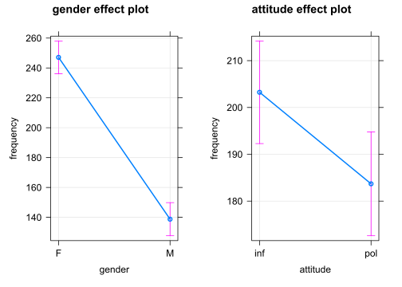
Man kann Regressionsmodelle auch mit tidyverse-Funktionen formulieren (der “.” bedeutet, dass der Datensatz “politeness” aus der vorherigen Zeile übernommen werden soll). Die tidy(()-Funktion des broom-Pakets sorgt für die Umformung in eine Tabelle.
library(broom)
politeness %>%
lm(frequency ~ attitude + gender, data = .) %>%
summary() %>%
broom::tidy()## # A tibble: 3 x 5
## term estimate std.error statistic p.value
## <chr> <dbl> <dbl> <dbl> <dbl>
## 1 (Intercept) 257. 6.76 38.0 5.75e-53
## 2 attitudepol -19.6 7.83 -2.50 1.46e- 2
## 3 genderM -108. 7.83 -13.8 6.40e-23Die unterschiedliche Tonlage bei informellem und höflichem Sprechen veranschaulichen wir noch mit einem Boxplot.
politeness %>%
ggplot(aes(attitude, frequency,
group = attitude, fill = attitude)) +
geom_boxplot() +
stat_summary(fun.y=mean, geom="point",
shape="*", size=7, color="red", fill="red") +
geom_jitter(width = 0.2) +
# geom_hline(yintercept = c(202.5),
# lty = 2, col = "darkred") + # Polite-Mittelwert
# geom_hline(yintercept = c(184.3),
# lty = 2, col = "darkgreen") + # Informal-Mittelwert
facet_wrap(~ gender)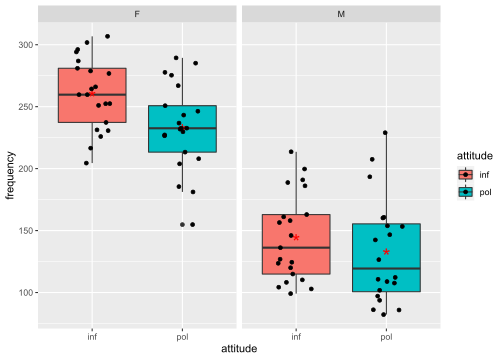
Der rote Stern markiert den Durchschnittswert der jeweiligen Gruppe, der schwarze Balken den Median (d.h. den Wert, der genau in der Mitte aller Daten der jeweiligen Gruppe liegt). Im Kasten eines Boxplots liegen 50% aller Werte, darunter liegen 25% und darüber ebenfalls 25%. Bei den Männern (M) ist zu sehen, dass der Median (der schwarze Balken) und das arithmetische Mittel (der rote Stern) nicht übereinstimmen. Das deutet auf extremere Unterschiede zwischen den männlichen Versuchspersonen (Schiefe oder Asymmetrie).
Die Schiefe (engl. skewness) oder Asymmetrie der Frequenzverteilung (Distribution) kann man in einem Histogramm oder Dichte-Diagramm (density) veranschaulichen. Das Histogram der weiblichen Versuchspersonen ist der Normalverteilung (einer Glockenform, mit den meisten Frequenzwerten in der Mitte) ähnlich, während das der männlichen deutlich schief ist.
politeness %>%
ggplot(aes(frequency, fill = attitude)) +
geom_density(alpha = 0.7) +
facet_wrap(~ gender)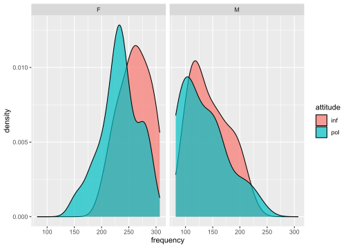
politeness %>%
ggplot(aes(frequency, fill = attitude)) +
geom_histogram(aes(y = ..count..), # density
binwidth = 50, alpha = 0.7, color = "white") +
facet_wrap(~ gender)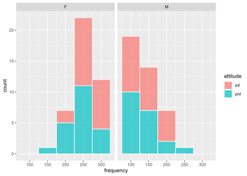
politeness %>%
filter(gender == "F") %>%
ggplot(aes(frequency)) +
geom_histogram(aes(y = ..density.., fill = attitude), # count
binwidth = 50, alpha = 0.7, color = "white") +
stat_function(
fun = dnorm,
args = list(
mean = mean(
politeness$frequency[politeness$gender == "F"], na.rm = T),
sd = sd(politeness$frequency[politeness$gender == "F"],
na.rm = T)),
col = "#1b98e0",
size = 2)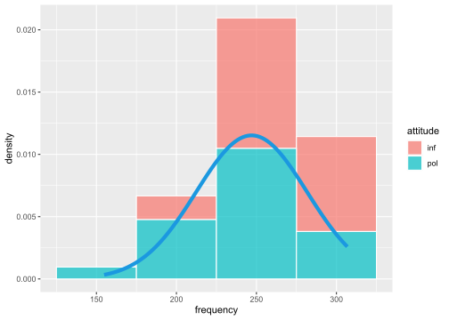
politeness %>%
filter(gender == "M") %>%
ggplot(aes(frequency)) +
geom_histogram(aes(y = ..density.., fill = attitude), # count
binwidth = 50, alpha = 0.7, color = "white") +
stat_function(
fun = dnorm,
args = list(
mean = mean(
politeness$frequency[politeness$gender == "M"], na.rm = T),
sd = sd(politeness$frequency[politeness$gender == "M"],
na.rm = T)),
col = "#1b98e0",
size = 2)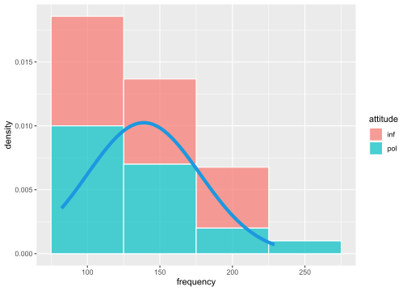
Wird das Sprechverhalten (attitude) durch das Geschlecht (gender) modifiziert (z.B. verändern Frauen ihre Tonlage beim höflichem Sprechen, Männer dagegen nicht oder kaum)? Das kann man durch Hinzufügung eines Interaktionsterms prüfen. Eine Interaktion kennzeichnet man in der Regressionsgleichung mit einem Stern zwischen den beteiligten Variablen (also wie beim Multiplizieren). Hier prüfen wir die Interaktion zwischen den beiden unabhängigen Variablen Geschlecht (gender) und Verhalten (attitude).
Die Indikatorterme attitude (informal vs. polite) und gender (female vs. male), beide also mit zwei Stufen oder levels, sind vergleichbar mit An-/Aus-Schaltern. Sie zeigen an, um welchen Wert die Frequenzkurve nach unten (bei negativem Koeffizient) oder oben (bei positivem Koeffizient) verschoben wird. Der Interaktionsterm der beiden Indikatorterme zeigt an, um welchen zusätzlichen Wert der Frequenzverlauf verändert wird. Wäre eine kontinuierliche Variable (z.B. Zeit) in der Interaktion einbezogen, dann würde der Koeffizient der Interaktion die zusätzliche Steigung (slope) der abhängigen Variable anzeigen.
m <- lm(frequency ~ attitude*gender, data = politeness)
m2 <- m
summary(m)##
## Call:
## lm(formula = frequency ~ attitude * gender, data = politeness)
##
## Residuals:
## Min 1Q Median 3Q Max
## -78.486 -27.383 -0.986 20.570 96.020
##
## Coefficients:
## Estimate Std. Error t value Pr(>|t|)
## (Intercept) 260.686 7.784 33.491 <2e-16 ***
## attitudepol -27.400 11.008 -2.489 0.0149 *
## genderM -116.195 11.008 -10.556 <2e-16 ***
## attitudepol:genderM 15.890 15.664 1.014 0.3135
## ---
## Signif. codes: 0 '***' 0.001 '**' 0.01 '*' 0.05 '.' 0.1 ' ' 1
##
## Residual standard error: 35.67 on 79 degrees of freedom
## (1 observation deleted due to missingness)
## Multiple R-squared: 0.7147, Adjusted R-squared: 0.7038
## F-statistic: 65.95 on 3 and 79 DF, p-value: < 2.2e-16Allerdings ist der p-Wert für die Interaktion in unserem Fall nicht signifikant (p = 0,3135 liegt oberhalb des 5% Signifikanzniveaus, p = 0,05). Das bedeutet, dass die Interaktion zur Erklärung des Frequenzverlaufs keinen Beitrag leistet. Daher ist es sinnvoll, den Interaktionsterm aus der Regressionsgleichung zu entfernen und nur die (signifkanten) Haupteffekte beizubehalten. Wir bevorzugen demnach immer das einfachere Modell, wenn das komplexere keinen signifikanten Erklärungsbeitrag leistet.
Mit der anova()-Funktion kann man Regressionsmodelle (hier: m1 und m2) miteinander vergleichen und prüfen, welches geeigneter ist, den Frequenzverlauf zu erklären. Modell m1 ist das Modell ohne Interaktion, Modell m2 das Modell mit Interaktionsterm.
anova(m1, m2)## Analysis of Variance Table
##
## Model 1: frequency ~ gender + attitude
## Model 2: frequency ~ attitude * gender
## Res.Df RSS Df Sum of Sq F Pr(>F)
## 1 80 101820
## 2 79 100511 1 1309.1 1.029 0.3135Der p-Wert (p = 0,3135) ist nicht signifikant. In diesem Fall bevorzugen wir das einfachere Regressionsmodell, d.h. das Modell ohne Interaktion (m1).
Mit Hilfe des Programms effects stellen wir das Regressionsmodell mit hinzugefügter Interaktion zwischen den beiden unabhängigen Variablen Geschlecht (gender) und Verhalten (attitude) auch graphisch dar.
library(effects)
allEffects(m)## model: frequency ~ attitude * gender
##
## attitude*gender effect
## gender
## attitude F M
## inf 260.6857 144.4905
## pol 233.2857 132.9800plot(allEffects(m), multiline=TRUE, grid=TRUE, rug=FALSE, as.table=TRUE, confint=list(style="bars"), x.var = "gender")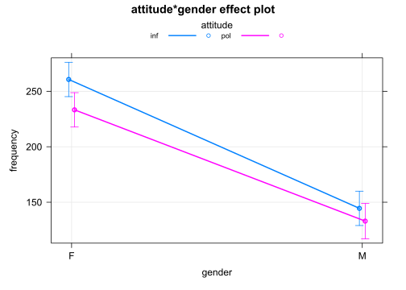
Die sich überschneidenden Konfidenzintervalle im Diagramm zeigen, dass die Durchschnittswerte keinen signifikanten Unterschied aufweisen. Außerdem gilt sowohl für die weiblichen als auch die männlichen Versuchspersonen, dass Frequenzwerte beim höflichen Sprechverhalten geringer sind. Die Interaktion liefert somit keinen signifikanten Erklärungsbeitrag. Es ist sinnvoll, nur die beiden Haupteffekte beizubehalten und die Interaktion aus dem Regressionsmodell herauszunehmen.
Das nächste Diagramm bestätigt, dass die Variablen Geschlecht (gender) und Verhalten (attitude) mit statistischer Signifikanz die Höhe des Grundfrequnezverlaufs (frequency) beeinflussen, nicht jedoch die Interaktion beider Variablen (deren Konfidenzintervall überschreitet im Diagramm die Null-Linie).
library(parameters)
library(see)
p1 = plot(parameters(m)) +
ggplot2::labs(title = "A Dot-and-Whisker Plot")
p1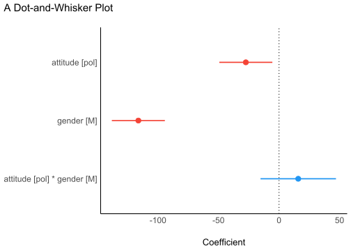
Das nächste Diagramm bestätigt, dass die Residuen (d.h. die jeweiligen Abweichungen der einzelnen Werte vom Durchschnitt) normalverteilt sind (p = 0.396, also größer als der Grenzwert 0.05). Damit ist eine der erforderlichen Bedingungen für die Durchführung einer linearen Regression erfüllt.
library(performance)
check <- check_normality(m)## OK: residuals appear as normally distributed (p = 0.396).## Warning: Non-normality of residuals detected (p = 0.016).
p2 = plot(check, type = "qq")
p2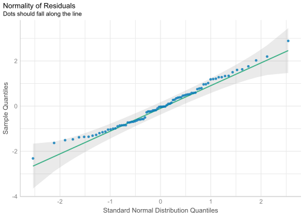
library(performance)
check <- check_normality(m, effects = "fixed")## OK: residuals appear as normally distributed (p = 0.396).## Warning: Non-normality of residuals detected (p = 0.016).
p2a = plot(check, type = "pp")
p2a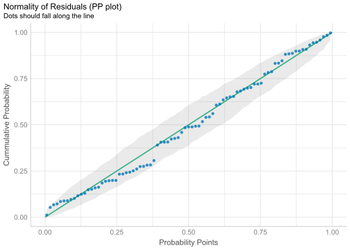
\(Omega^2\) ist eine alternative Größe zu \(R^2\), womit ebenfalls die erklärte Varianz eines linearen Regressionsmodells angegeben wird. Im Diagramm ist zu sehen, dass die Variable Geschlecht (gender) den größten Beitrag leistet (fast 70%), die Variable Verhalten (attitude) ca. 5%, während die Interaktion beider Variablen keinen signifikanten Beitrag zu Erklärung der Varianz leistet (Wert liegt bei 0%).
library(effectsize)
library(see)
m <- aov(frequency ~ attitude*gender, data = politeness)
p3 = plot(omega_squared(m))
p3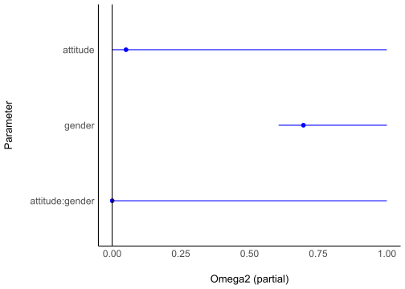
Das nächste Diagramm zeigt die Verteilung der Daten für die beiden Geschlechter.
p4 = ggplot(politeness, aes(x = attitude, y = frequency, color = gender)) +
geom_point2() +
theme_modern()
p4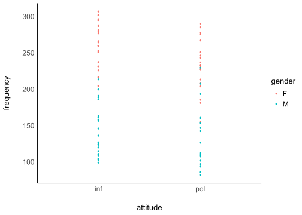
Weitere Darstellungsmöglichkeiten der Datendistribution:
p4 = ggplot(politeness,
aes(x = attitude, y = frequency, fill = gender)) +
geom_violin() +
theme_modern(axis.text.angle = 45) +
scale_fill_material_d(palette = "ice")
p4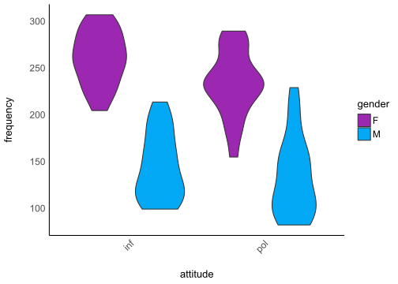
p5 = ggplot(politeness,
aes(x = attitude, y = frequency, fill = gender)) +
geom_violindot(fill_dots = "black") +
geom_jitter(width = 0.05) +
theme_modern() +
scale_fill_material_d()
p5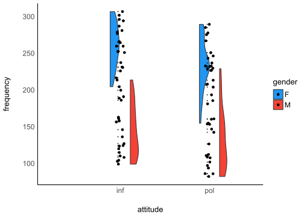
Ob die Bedingungen für die Durchführung einer linearen Regression erfüllt sind, kann man mit einem Befehl ausführen, und zwar mit Hilfe des Programms performance. Hier wählen wir die Funktion check_model() mit dem Modell ohne Interaktion (da diese nicht signifikant war).
library(performance)
m <- lm(frequency ~ attitude + gender, data = politeness)
summary(m)##
## Call:
## lm(formula = frequency ~ attitude + gender, data = politeness)
##
## Residuals:
## Min 1Q Median 3Q Max
## -82.409 -26.561 -4.262 24.690 100.140
##
## Coefficients:
## Estimate Std. Error t value Pr(>|t|)
## (Intercept) 256.762 6.756 38.006 <2e-16 ***
## attitudepol -19.553 7.833 -2.496 0.0146 *
## genderM -108.349 7.833 -13.832 <2e-16 ***
## ---
## Signif. codes: 0 '***' 0.001 '**' 0.01 '*' 0.05 '.' 0.1 ' ' 1
##
## Residual standard error: 35.68 on 80 degrees of freedom
## (1 observation deleted due to missingness)
## Multiple R-squared: 0.7109, Adjusted R-squared: 0.7037
## F-statistic: 98.38 on 2 and 80 DF, p-value: < 2.2e-16check <- check_model(m)
p6 = plot(check)
p6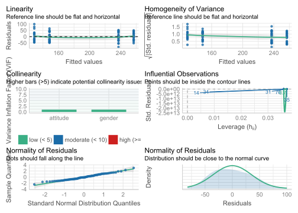
Collage mehrerer der oben einzeln gezeigten Diagramme mit Hilfe der plots()-Funktion im Programm performance:
plots(p1,p2,p3,p4,
n_columns = 2,
tags = paste0("B", 1:4))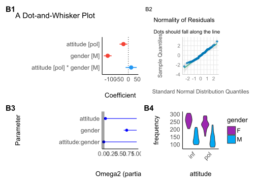
Eine Bayesianische Regressionsberechnung erlauben die Programmen bayestestR und rstanarm. Mit dem Programm see können wir die Datendistribution sichtbar machen.
library(bayestestR)
library(rstanarm)
library(see)
set.seed(123)
m <- stan_glm(frequency ~ attitude + gender,
data = politeness, refresh = 0)
result <- hdi(m, ci = c(0.5, 0.75, 0.89, 0.95))
plot(result)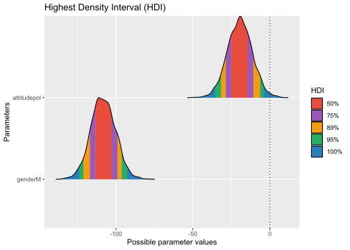
5.2.3.6 Ergebnis
Die Regressionsanalyse hat \(H_1\) bestätigt, d.h. die Grundfrequenz beim höflichen Sprechverhalten unterscheidet sich vom informellen Sprechen. Beim höflichen Sprechen sprachen die Versuchspersonen mit einer durchschnittlich 19,5 Hz tieferen Stimme: bei den weiblichen Versuchspersonen mehr als 27 Hz (261 - 233 Hz), bei den männlichen mehr als 11 Hz (144 - 133 Hz)).
5.2.3.7 Lineare Regression
Politeness data (B. Winter tutorial)
Programme laden:
library(tidyverse)Datei laden:
# LOAD
polite <- read.csv("data/politeness_data.csv", dec=".")Ansicht der Datenlage zu Orientierungszwecken:
head(polite)## subject gender scenario attitude frequency
## 1 F1 F 1 pol 213.3
## 2 F1 F 1 inf 204.5
## 3 F1 F 2 pol 285.1
## 4 F1 F 2 inf 259.7
## 5 F1 F 3 pol 203.9
## 6 F1 F 3 inf 286.9Variablentyp festlegen:
polite$frequency = as.numeric(polite$frequency)
polite$scenario = as.factor(polite$scenario)
polite$subject = as.factor(polite$subject)
polite$gender = as.factor(polite$gender)
polite$attitude = as.factor(polite$attitude)Kontraste für den statistischen Test setzen:
# In this session we use contr. sum contrasts
options(contrasts=c('contr.sum', 'contr.poly'))
options("contrasts")## $contrasts
## [1] "contr.sum" "contr.poly"Kontraste zurücksetzen:
# To reset default settings run:
options(contrasts=c('contr.treatment', 'contr.poly'))
# (all afex functions should be unaffected by this)
# # Setting contrasts of chosen variables only
# contrasts(polite$attitude) <- contr.treatment(2, base = 1)Einfacher Boxplot:
boxplot(frequency ~ attitude*gender,
col=c("red","green"), data = polite)Bild speichern:
- z.B. im jpg-Format oder
- im pdf-Format.
# 1. Open jpeg file
jpeg("pictures/politeness_boxplot.jpg",
width = 840, height = 535)
# 2. Create the plot
boxplot(frequency ~ attitude*gender,
col=c("red","green"), data = polite)
# 3. Close the file
dev.off()## svg
## 2# Open a pdf file
pdf("pictures/politeness_boxplot.pdf")
# 2. Create a plot
boxplot(frequency ~ attitude*gender,
col=c("red","green"), data = polite)
# Close the pdf file
dev.off() ## svg
## 2Beziehungen zwischen Variablenpaaren anzeigen:
library(psych)
pairs.panels(polite[c(2,4,5)])Lineare Regression mit mehreren unabhängigen Variablen und einer abhängigen Variable, im Englischen auch als Ordinary Least Squares Regression (OLS) bekannt.
Mit allen unabhängigen Variablen:
# model 1
m <- lm(frequency ~ gender + attitude + subject + scenario, data = polite)
summary(m)##
## Call:
## lm(formula = frequency ~ gender + attitude + subject + scenario,
## data = polite)
##
## Residuals:
## Min 1Q Median 3Q Max
## -53.673 -16.686 1.039 12.027 86.630
##
## Coefficients: (1 not defined because of singularities)
## Estimate Std. Error t value Pr(>|t|)
## (Intercept) 225.150 10.020 22.470 < 2e-16 ***
## genderM -129.857 9.606 -13.518 < 2e-16 ***
## attitudepol -19.794 5.585 -3.544 0.000707 ***
## subjectF2 26.150 9.606 2.722 0.008179 **
## subjectF3 18.700 9.606 1.947 0.055592 .
## subjectM3 66.800 9.606 6.954 1.52e-09 ***
## subjectM4 41.854 9.807 4.268 6.09e-05 ***
## subjectM7 NA NA NA NA
## scenario2 25.017 10.376 2.411 0.018537 *
## scenario3 31.025 10.376 2.990 0.003847 **
## scenario4 42.508 10.376 4.097 0.000111 ***
## scenario5 14.408 10.376 1.389 0.169351
## scenario6 1.405 10.629 0.132 0.895227
## scenario7 3.117 10.376 0.300 0.764783
## ---
## Signif. codes: 0 '***' 0.001 '**' 0.01 '*' 0.05 '.' 0.1 ' ' 1
##
## Residual standard error: 25.42 on 70 degrees of freedom
## (1 observation deleted due to missingness)
## Multiple R-squared: 0.8716, Adjusted R-squared: 0.8496
## F-statistic: 39.61 on 12 and 70 DF, p-value: < 2.2e-16Regression mit denjenigen Variablen, die als Prädiktoren für die abhängige Variable gewählt wurden:
# model 2
m <- lm(frequency ~ gender + attitude, data=polite)
summary(m)##
## Call:
## lm(formula = frequency ~ gender + attitude, data = polite)
##
## Residuals:
## Min 1Q Median 3Q Max
## -82.409 -26.561 -4.262 24.690 100.140
##
## Coefficients:
## Estimate Std. Error t value Pr(>|t|)
## (Intercept) 256.762 6.756 38.006 <2e-16 ***
## genderM -108.349 7.833 -13.832 <2e-16 ***
## attitudepol -19.553 7.833 -2.496 0.0146 *
## ---
## Signif. codes: 0 '***' 0.001 '**' 0.01 '*' 0.05 '.' 0.1 ' ' 1
##
## Residual standard error: 35.68 on 80 degrees of freedom
## (1 observation deleted due to missingness)
## Multiple R-squared: 0.7109, Adjusted R-squared: 0.7037
## F-statistic: 98.38 on 2 and 80 DF, p-value: < 2.2e-16Koeffizienten der Variablen anzeigen:
library(effects)
allEffects(m)## model: frequency ~ gender + attitude
##
## gender effect
## gender
## F M
## 247.1035 138.7549
##
## attitude effect
## attitude
## inf pol
## 203.2408 183.6875Visuelle Darstellung der Regressionsergebnisse:
plot(allEffects(m), multiline=TRUE, grid=TRUE, rug=FALSE, as.table=TRUE)Bild sichern:
# Save plot of the effects to disk
# 1. Open jpeg file
jpeg("pictures/politeness_lineplot.jpg",
width = 840, height = 535)
# 2. Create the plot
plot(allEffects(m), multiline=TRUE, grid=TRUE, rug=FALSE, as.table=TRUE)
# 3. Close the file
dev.off()## svg
## 2Ein weiteres Regressionsmodell mit einer Interaktion zwischen den unabhängigen Variablen (Prädiktoren):
# model 3 (with interaction)
m <- lm(frequency ~ gender*attitude, data=polite)
summary(m)##
## Call:
## lm(formula = frequency ~ gender * attitude, data = polite)
##
## Residuals:
## Min 1Q Median 3Q Max
## -78.486 -27.383 -0.986 20.570 96.020
##
## Coefficients:
## Estimate Std. Error t value Pr(>|t|)
## (Intercept) 260.686 7.784 33.491 <2e-16 ***
## genderM -116.195 11.008 -10.556 <2e-16 ***
## attitudepol -27.400 11.008 -2.489 0.0149 *
## genderM:attitudepol 15.890 15.664 1.014 0.3135
## ---
## Signif. codes: 0 '***' 0.001 '**' 0.01 '*' 0.05 '.' 0.1 ' ' 1
##
## Residual standard error: 35.67 on 79 degrees of freedom
## (1 observation deleted due to missingness)
## Multiple R-squared: 0.7147, Adjusted R-squared: 0.7038
## F-statistic: 65.95 on 3 and 79 DF, p-value: < 2.2e-16Koeffizienten der Variablen anzeigen:
library(effects)
allEffects(m)## model: frequency ~ gender * attitude
##
## gender*attitude effect
## attitude
## gender inf pol
## F 260.6857 233.2857
## M 144.4905 132.9800Visuelle Darstellung der Regressionsergebnisse:
plot(allEffects(m), multiline=TRUE, grid=TRUE, rug=FALSE, as.table=TRUE)Bild als jpg-Datei sichern:
# Save plot of the effects to disk
# 1. Open jpeg file
jpeg("pictures/politeness_effects.jpg",
width = 840, height = 535)
# 2. Create the plot
plot(allEffects(m), multiline=TRUE, grid=TRUE, rug=FALSE, as.table=TRUE)
# 3. Close the file
dev.off()## svg
## 2Bild als pdf-Datei sichern:
# Open a pdf file
pdf("pictures/politeness_effects.pdf")
# 2. Create a plot
plot(allEffects(m), multiline=TRUE, grid=TRUE, rug=FALSE, as.table=TRUE)
# Close the pdf file
dev.off() ## svg
## 2Diagnostische Analyse (sind die Bedingungen für eine Regression erfüllt?):
# plot diagnostic diagrams
par(mfrow = c(3,2))
plot(m, which = 1) # variance of residuals vs. fitted values?
plot(m, which = 2) # normal distributed residuals?
plot(m, which = 3) # variance of residuals standardized
plot(m, which = 4) # Cook's distance (outliers / influencing data points?)
plot(m, which = 5) # Leverage vs. standardized variance of residuals
plot(m, which = 6) # Cook's distance vs. Leverage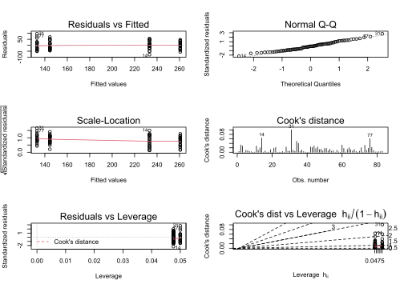
par(mfrow = c(1,1))Entfernung eines Datenpunktes und die dabei entstehende Veränderung des Koeffizienten:
# Change of estimates if one datapoint is removed from the model
d <- dfbetas(m)
head(d) %>% as.data.frame %>% rmarkdown::paged_table()Koeffizienten visuell darstellen:
# plot the dfbetas (are there any outliers or data points with high influence?)
par(mfrow = c(1,3))
plot(d[,1], col = "orange")
plot(d[,2], col = "blue")
plot(d[,3], col = "purple")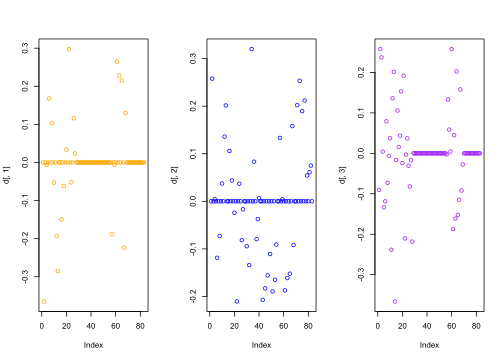
par(mfrow = c(1,1))5.2.3.8 Regression mit gemischten Effekten
(Mixed effects Regression, Multilevel Regression)
Programme laden:
# The variables 'subject' and 'scenario' have been chosen as random effects
library(afex)
library(lmerTest)
library(LMERConvenienceFunctions)Regressionsmodell mit einem individuell variierenden Intercept (Ordinate):
# random intercepts model
m <- lmer(frequency ~
(1|subject),
REML=F, data=politeness)
m0.1 <- m
summary(m)## Linear mixed model fit by maximum likelihood . t-tests use Satterthwaite's
## method [lmerModLmerTest]
## Formula: frequency ~ (1 | subject)
## Data: politeness
##
## AIC BIC logLik deviance df.resid
## 833.2 840.5 -413.6 827.2 80
##
## Scaled residuals:
## Min 1Q Median 3Q Max
## -2.4921 -0.6514 -0.1596 0.6511 2.6732
##
## Random effects:
## Groups Name Variance Std.Dev.
## subject (Intercept) 3289.7 57.36
## Residual 941.2 30.68
## Number of obs: 83, groups: subject, 6
##
## Fixed effects:
## Estimate Std. Error df t value Pr(>|t|)
## (Intercept) 193.027 23.656 6.001 8.16 0.000182 ***
## ---
## Signif. codes: 0 '***' 0.001 '**' 0.01 '*' 0.05 '.' 0.1 ' ' 1Regressionsmodell mit zwei individuell variierenden Intercepts (Ordinaten):
# random intercepts model
m <- lmer(frequency ~
(1|subject) + (1|scenario),
REML=F, data=politeness)
m0.2 <- m
summary(m)## Linear mixed model fit by maximum likelihood . t-tests use Satterthwaite's
## method [lmerModLmerTest]
## Formula: frequency ~ (1 | subject) + (1 | scenario)
## Data: politeness
##
## AIC BIC logLik deviance df.resid
## 826.6 836.3 -409.3 818.6 79
##
## Scaled residuals:
## Min 1Q Median 3Q Max
## -2.40887 -0.53279 -0.09441 0.63269 2.80566
##
## Random effects:
## Groups Name Variance Std.Dev.
## scenario (Intercept) 202.5 14.23
## subject (Intercept) 3344.0 57.83
## Residual 751.4 27.41
## Number of obs: 83, groups: scenario, 7; subject, 6
##
## Fixed effects:
## Estimate Std. Error df t value Pr(>|t|)
## (Intercept) 192.886 24.400 6.587 7.905 0.000135 ***
## ---
## Signif. codes: 0 '***' 0.001 '**' 0.01 '*' 0.05 '.' 0.1 ' ' 1Regressionsmodell mit zwei individuell variierenden Intercepts (Ordinaten) und einer kategorischen Variable:
# random intercepts model
m <- lmer(frequency ~ gender +
(1|subject) + (1|scenario),
REML=F, data=politeness)
m1 <- m
summary(m)## Linear mixed model fit by maximum likelihood . t-tests use Satterthwaite's
## method [lmerModLmerTest]
## Formula: frequency ~ gender + (1 | subject) + (1 | scenario)
## Data: politeness
##
## AIC BIC logLik deviance df.resid
## 816.7 828.8 -403.4 806.7 78
##
## Scaled residuals:
## Min 1Q Median 3Q Max
## -2.49969 -0.57100 -0.06373 0.60229 2.86559
##
## Random effects:
## Groups Name Variance Std.Dev.
## scenario (Intercept) 191.2 13.83
## subject (Intercept) 409.6 20.24
## Residual 751.9 27.42
## Number of obs: 83, groups: scenario, 7; subject, 6
##
## Fixed effects:
## Estimate Std. Error df t value Pr(>|t|)
## (Intercept) 246.986 13.481 7.676 18.321 1.3e-07 ***
## genderM -108.236 17.588 5.939 -6.154 0.000877 ***
## ---
## Signif. codes: 0 '***' 0.001 '**' 0.01 '*' 0.05 '.' 0.1 ' ' 1
##
## Correlation of Fixed Effects:
## (Intr)
## genderM -0.651Regressionsmodell mit zwei individuell variierenden Intercepts (Ordinaten) und zwei Prädiktoren, zwei kategorischen Variablen. Von Interesse ist die Variable attitude (hier: sprachliches Verhalten).
m <- lmer(frequency ~ gender + attitude +
(1|subject) + (1|scenario),
REML=F, data=politeness)
m2 <- m
summary(m)## Linear mixed model fit by maximum likelihood . t-tests use Satterthwaite's
## method [lmerModLmerTest]
## Formula: frequency ~ gender + attitude + (1 | subject) + (1 | scenario)
## Data: politeness
##
## AIC BIC logLik deviance df.resid
## 807.1 821.6 -397.6 795.1 77
##
## Scaled residuals:
## Min 1Q Median 3Q Max
## -2.2958 -0.6456 -0.0776 0.5448 3.5121
##
## Random effects:
## Groups Name Variance Std.Dev.
## scenario (Intercept) 205.2 14.33
## subject (Intercept) 417.0 20.42
## Residual 637.4 25.25
## Number of obs: 83, groups: scenario, 7; subject, 6
##
## Fixed effects:
## Estimate Std. Error df t value Pr(>|t|)
## (Intercept) 256.847 13.827 8.500 18.576 3.53e-08 ***
## genderM -108.517 17.571 5.929 -6.176 0.000866 ***
## attitudepol -19.722 5.547 70.920 -3.555 0.000677 ***
## ---
## Signif. codes: 0 '***' 0.001 '**' 0.01 '*' 0.05 '.' 0.1 ' ' 1
##
## Correlation of Fixed Effects:
## (Intr) gendrM
## genderM -0.635
## attitudepol -0.201 0.004Regressionsmodell mit zwei individuell variierenden Intercepts (Ordinaten) und zwei interagierenden Prädiktoren. Von Interesse ist die Variable attitude.
m <- lmer(frequency ~ gender*attitude +
(1|subject) + (1|scenario),
REML=F, data=politeness)
m3 <- m
summary(m)## Linear mixed model fit by maximum likelihood . t-tests use Satterthwaite's
## method [lmerModLmerTest]
## Formula: frequency ~ gender * attitude + (1 | subject) + (1 | scenario)
## Data: politeness
##
## AIC BIC logLik deviance df.resid
## 807.1 824.0 -396.6 793.1 76
##
## Scaled residuals:
## Min 1Q Median 3Q Max
## -2.1678 -0.5559 -0.0628 0.5103 3.3903
##
## Random effects:
## Groups Name Variance Std.Dev.
## scenario (Intercept) 205.0 14.32
## subject (Intercept) 418.8 20.47
## Residual 620.0 24.90
## Number of obs: 83, groups: scenario, 7; subject, 6
##
## Fixed effects:
## Estimate Std. Error df t value Pr(>|t|)
## (Intercept) 260.686 14.086 9.140 18.506 1.48e-08 ***
## genderM -116.195 18.392 7.094 -6.318 0.000376 ***
## attitudepol -27.400 7.684 70.881 -3.566 0.000655 ***
## genderM:attitudepol 15.568 10.943 70.925 1.423 0.159229
## ---
## Signif. codes: 0 '***' 0.001 '**' 0.01 '*' 0.05 '.' 0.1 ' ' 1
##
## Correlation of Fixed Effects:
## (Intr) gendrM atttdp
## genderM -0.653
## attitudepol -0.273 0.209
## gndrM:tttdp 0.192 -0.293 -0.702Mit dem Programm jtools erhält man die Regressionsergebnisse in übersichtlicherer Form und mit zusätzlichen Größenberechnungen:
library(jtools)
summ(m3)| Observations | 83 |
| Dependent variable | frequency |
| Type | Mixed effects linear regression |
| AIC | 807.11 |
| BIC | 824.04 |
| Pseudo-R2 (fixed effects) | 0.71 |
| Pseudo-R2 (total) | 0.86 |
| Est. | S.E. | t val. | d.f. | p | |
|---|---|---|---|---|---|
| (Intercept) | 260.69 | 14.09 | 18.51 | 9.14 | 0.00 |
| genderM | -116.20 | 18.39 | -6.32 | 7.09 | 0.00 |
| attitudepol | -27.40 | 7.68 | -3.57 | 70.88 | 0.00 |
| genderM:attitudepol | 15.57 | 10.94 | 1.42 | 70.92 | 0.16 |
| p values calculated using Satterthwaite d.f. |
| Group | Parameter | Std. Dev. |
|---|---|---|
| scenario | (Intercept) | 14.32 |
| subject | (Intercept) | 20.47 |
| Residual | 24.90 |
| Group | # groups | ICC |
|---|---|---|
| scenario | 7 | 0.16 |
| subject | 6 | 0.34 |
Vergleich der Modelle:
anova(m0.1, m0.2,m1,m2,m3)## Data: politeness
## Models:
## m0.1: frequency ~ (1 | subject)
## m0.2: frequency ~ (1 | subject) + (1 | scenario)
## m1: frequency ~ gender + (1 | subject) + (1 | scenario)
## m2: frequency ~ gender + attitude + (1 | subject) + (1 | scenario)
## m3: frequency ~ gender * attitude + (1 | subject) + (1 | scenario)
## npar AIC BIC logLik deviance Chisq Df Pr(>Chisq)
## m0.1 3 833.25 840.51 -413.62 827.25
## m0.2 4 826.63 836.30 -409.31 818.63 8.6246 1 0.0033166 **
## m1 5 816.72 828.81 -403.36 806.72 11.9059 1 0.0005596 ***
## m2 6 807.10 821.61 -397.55 795.10 11.6178 1 0.0006532 ***
## m3 7 807.11 824.04 -396.55 793.11 1.9963 1 0.1576796
## ---
## Signif. codes: 0 '***' 0.001 '**' 0.01 '*' 0.05 '.' 0.1 ' ' 1Mit Hilfe der anova()-Funktion kann man eine Anova-Tabelle erstellen.
anova(m3)## Type III Analysis of Variance Table with Satterthwaite's method
## Sum Sq Mean Sq NumDF DenDF F value Pr(>F)
## gender 23570.5 23570.5 1 5.929 38.0164 0.0008739 ***
## attitude 7969.4 7969.4 1 70.925 12.8536 0.0006146 ***
## gender:attitude 1254.8 1254.8 1 70.925 2.0239 0.1592288
## ---
## Signif. codes: 0 '***' 0.001 '**' 0.01 '*' 0.05 '.' 0.1 ' ' 1Die Anova (mit Grundfrequenz als abhängige Variable, Geschlecht, Verhalten und ihrer Interaktion als Prädiktoren sowie Versuchspersonen und Szenario als Zufallsvariablen) ergab Geschlecht als signifikanten Haupteffekt (F(1; 5,929) = 38,0164; p = 0,0009; \(\eta_{p}^2\) = 0,87) und Verhalten als signifikanten Haupteffekt auf die Höhe der Grundfrequenz (F(1; 70,925) = 12,8536; p = 0,0006; \(\eta_{p}^2\) = 0,15). Die Interaktion zwischen Geschlecht und Verhalten war nicht signifikant (F(1; 70,925) = 2,0239; p = 0,15923; \(\eta_{p}^2\) = 0,03).
Das Pseudo-\(R^2\) für die Koeffizienten der Prädiktoren beträgt 0,71 (d.h. 71% der Varianz der Grundfrequenz wurden mit den Prädiktoren erklärt), das Pseudo-\(R^2\) für die Koeffizienten aller Effekte (fixed effects + random effects) beträgt 0,857 (d.h. mit allen Variablen wurden fast 86% der Grundfrequenzvariation erklärt).
Der Post-hoc-Test für die Interaktion von Geschlecht und Verhalten ergab außerdem signifikant Unterschiede zwischen weiblichen und männlichen Testpersonen hinsichtlich der Grundfrequenzhöhe, und zwar sowohl bei informellen Sprechen (p = 0,0003) als auch bei höflichem Sprechen (p = 0,001). Da unter beiden Bedingungen (informelles vs. höfliches sprachliches Verhalten) ein signifikante Unterschied zwischen weiblichen und männlichen Versuchspersonen festgestellt wurde, führte die Interaktion beider Prädiktoren zu keinem signifikanten Einfluss auf den Verlauf der Grundfrequenz.
Die \(\eta^2\)-Funktion:
library(sjstats)
eta_sq(m3, partial = TRUE)## # Effect Size for ANOVA (Type III)
##
## Parameter | Eta2 (partial) | 95% CI
## -----------------------------------------------
## gender | 0.87 | [0.56, 1.00]
## attitude | 0.15 | [0.05, 1.00]
## gender:attitude | 0.03 | [0.00, 1.00]
##
## - One-sided CIs: upper bound fixed at (1).library(effectsize)
eta_squared(m3, partial = TRUE)## # Effect Size for ANOVA (Type III)
##
## Parameter | Eta2 (partial) | 95% CI
## -----------------------------------------------
## gender | 0.87 | [0.56, 1.00]
## attitude | 0.15 | [0.05, 1.00]
## gender:attitude | 0.03 | [0.00, 1.00]
##
## - One-sided CIs: upper bound fixed at (1).Die Pseudo-\(R^2\)-Funktion:
library(MuMIn)
r.squaredGLMM(m3)## R2m R2c
## [1,] 0.7122865 0.8565861Der Post-hoc-Test für die Interaktion von Geschlecht und Verhalten:
library(emmeans)
emmeans(m3, pairwise ~ gender)## $emmeans
## gender emmean SE df lower.CL upper.CL
## F 247 15.9 9.71 211 283
## M 139 15.9 9.74 103 174
##
## Results are averaged over the levels of: attitude
## Degrees-of-freedom method: kenward-roger
## Confidence level used: 0.95
##
## $contrasts
## contrast estimate SE df t.ratio p.value
## F - M 108 21 8.18 5.155 0.0008
##
## Results are averaged over the levels of: attitude
## Degrees-of-freedom method: kenward-roger# with interaction
emmeans(m3, pairwise ~ gender | attitude)## $emmeans
## attitude = inf:
## gender emmean SE df lower.CL upper.CL
## F 261 16.3 11.3 224.8 297
## M 144 16.3 11.3 108.6 180
##
## attitude = pol:
## gender emmean SE df lower.CL upper.CL
## F 233 16.3 11.3 197.4 269
## M 133 16.4 11.5 96.8 169
##
## Degrees-of-freedom method: kenward-roger
## Confidence level used: 0.95
##
## $contrasts
## attitude = inf:
## contrast estimate SE df t.ratio p.value
## F - M 116 21.7 9.79 5.348 0.0003
##
## attitude = pol:
## contrast estimate SE df t.ratio p.value
## F - M 101 21.8 9.88 4.623 0.0010
##
## Degrees-of-freedom method: kenward-rogerDie oben berechneten Regressionsmodelle berücksichtigen die beiden Zufallsvariablen (random effects) Versuchsperson und Szenario. Damit berücksichtigen wir interindividuelle Unterschiede zwischen den Testpersonen und Unterschiede zwischen den verschiedenen Szenarien, die alle die Höhe der Grundfrequenz beeinflussen könnten. Dies ergibt individuelle Regressionskonstanten (Intercepts) für die einzelnen Versuchspersonen und Szenarien.
Unterscheiden sich die Versuchspersonen nun auch darin, dass z.B. bestimmte Szenarien sie eher zu Grundfrequenzvariationen bewegen, d.h. die Steigung des Regressionskoeffizienten individuell beeinflussen (random slope)?
Zuerst stellen wir ein Basismodell mit individuellen Steigungskoeffizienten auf:
# politeness affected pitch (χ2(1)=11.62, p=0.00065),
# lowering it by about 19.7 Hz ± 5.6 (standard errors)
# random slopes model
m <- lmer(frequency ~ gender +
(attitude + 1|subject) + (1|scenario),
REML=F, data=politeness)
m00 <- m
summary(m)## Linear mixed model fit by maximum likelihood . t-tests use Satterthwaite's
## method [lmerModLmerTest]
## Formula: frequency ~ gender + (attitude + 1 | subject) + (1 | scenario)
## Data: politeness
##
## AIC BIC logLik deviance df.resid
## 817.7 834.6 -401.9 803.7 76
##
## Scaled residuals:
## Min 1Q Median 3Q Max
## -2.2027 -0.6377 -0.1128 0.5095 3.0282
##
## Random effects:
## Groups Name Variance Std.Dev. Corr
## scenario (Intercept) 197.9 14.07
## subject (Intercept) 380.6 19.51
## attitudepol 276.8 16.64 0.64
## Residual 670.4 25.89
## Number of obs: 83, groups: scenario, 7; subject, 6
##
## Fixed effects:
## Estimate Std. Error df t value Pr(>|t|)
## (Intercept) 267.329 13.337 7.798 20.044 5.47e-08 ***
## genderM -120.049 17.301 5.919 -6.939 0.000471 ***
## ---
## Signif. codes: 0 '***' 0.001 '**' 0.01 '*' 0.05 '.' 0.1 ' ' 1
##
## Correlation of Fixed Effects:
## (Intr)
## genderM -0.648Dann fügen wir die uns interessierende Variable attitude hinzu:
m <- lmer(frequency ~ gender + attitude +
(1|subject) + (attitude + 1|scenario),
REML=F, data=politeness)
m01 <- m
summary(m)## Linear mixed model fit by maximum likelihood . t-tests use Satterthwaite's
## method [lmerModLmerTest]
## Formula: frequency ~ gender + attitude + (1 | subject) + (attitude + 1 |
## scenario)
## Data: politeness
##
## AIC BIC logLik deviance df.resid
## 810.9 830.3 -397.5 794.9 75
##
## Scaled residuals:
## Min 1Q Median 3Q Max
## -2.2155 -0.6618 -0.0594 0.5256 3.4391
##
## Random effects:
## Groups Name Variance Std.Dev. Corr
## scenario (Intercept) 183.3 13.538
## attitudepol 31.1 5.577 0.20
## subject (Intercept) 417.2 20.425
## Residual 628.3 25.066
## Number of obs: 83, groups: scenario, 7; subject, 6
##
## Fixed effects:
## Estimate Std. Error df t value Pr(>|t|)
## (Intercept) 256.863 13.704 8.129 18.744 5.61e-08 ***
## genderM -108.550 17.563 5.931 -6.181 0.000862 ***
## attitudepol -19.755 5.898 7.136 -3.350 0.011914 *
## ---
## Signif. codes: 0 '***' 0.001 '**' 0.01 '*' 0.05 '.' 0.1 ' ' 1
##
## Correlation of Fixed Effects:
## (Intr) gendrM
## genderM -0.641
## attitudepol -0.161 0.004Wenn das Regressionsmodell mit den individuell variierenden Steigungskoeffizienten nicht berechnet werden kann, könnte auch ein Modell mit nur einem individuell variierenden Intercept in Frage kommen, z.B. diesem hier:
Eine weitere mögliche Variante mit nur einem individuell variierenden Steigungskoeffizienten:
Die Steigungskoeffizienten:
m <- m01
library(effects)
allEffects(m)## model: frequency ~ gender + attitude
##
## gender effect
## gender
## F M
## 247.1047 138.5548
##
## attitude effect
## attitude
## inf pol
## 203.2420 183.4873Visuelle Darstellung der Regressionsergebnisse:
plot(allEffects(m), multiline=TRUE, grid=TRUE, rug=FALSE, as.table=TRUE)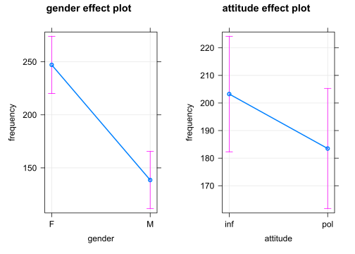
Das volle Regressionsmodell mit zwei individuell variierenden Intercepts und einem individuell variierenden Steigungskoeffizienten sowie einer Interaktion zweier kategorieller Prädiktoren:
m <- lmer(frequency ~ gender*attitude +
(1|subject) + (attitude + 1|scenario),
REML=F, data=politeness)Die Regressionsergebnisse:
m02 <- m
summary(m)## Linear mixed model fit by maximum likelihood . t-tests use Satterthwaite's
## method [lmerModLmerTest]
## Formula: frequency ~ gender * attitude + (1 | subject) + (attitude + 1 |
## scenario)
## Data: politeness
##
## AIC BIC logLik deviance df.resid
## 810.9 832.7 -396.5 792.9 74
##
## Scaled residuals:
## Min 1Q Median 3Q Max
## -2.0820 -0.5585 -0.0174 0.4937 3.3116
##
## Random effects:
## Groups Name Variance Std.Dev. Corr
## scenario (Intercept) 186.40 13.653
## attitudepol 36.41 6.034 0.13
## subject (Intercept) 419.22 20.475
## Residual 609.35 24.685
## Number of obs: 83, groups: scenario, 7; subject, 6
##
## Fixed effects:
## Estimate Std. Error df t value Pr(>|t|)
## (Intercept) 260.686 13.978 8.779 18.650 2.3e-08 ***
## genderM -116.195 18.372 7.075 -6.325 0.000378 ***
## attitudepol -27.400 7.952 22.083 -3.446 0.002296 **
## genderM:attitudepol 15.506 10.850 64.159 1.429 0.157813
## ---
## Signif. codes: 0 '***' 0.001 '**' 0.01 '*' 0.05 '.' 0.1 ' ' 1
##
## Correlation of Fixed Effects:
## (Intr) gendrM atttdp
## genderM -0.657
## attitudepol -0.247 0.199
## gndrM:tttdp 0.191 -0.291 -0.673library(jtools)
summ(m)| Observations | 83 |
| Dependent variable | frequency |
| Type | Mixed effects linear regression |
| AIC | 810.92 |
| BIC | 832.69 |
| Pseudo-R2 (fixed effects) | 0.71 |
| Pseudo-R2 (total) | 0.86 |
| Est. | S.E. | t val. | d.f. | p | |
|---|---|---|---|---|---|
| (Intercept) | 260.69 | 13.98 | 18.65 | 8.78 | 0.00 |
| genderM | -116.20 | 18.37 | -6.32 | 7.07 | 0.00 |
| attitudepol | -27.40 | 7.95 | -3.45 | 22.08 | 0.00 |
| genderM:attitudepol | 15.51 | 10.85 | 1.43 | 64.16 | 0.16 |
| p values calculated using Satterthwaite d.f. |
| Group | Parameter | Std. Dev. |
|---|---|---|
| scenario | (Intercept) | 13.65 |
| scenario | attitudepol | 6.03 |
| subject | (Intercept) | 20.47 |
| Residual | 24.68 |
| Group | # groups | ICC |
|---|---|---|
| scenario | 7 | 0.15 |
| subject | 6 | 0.35 |
Vergleich der Modelle:
Das Modell m02 (mit Interaktion) ist nicht signifikant besser als Modell m01 (ohne Interaktion). Demnach entscheiden wir uns für das einfachere Regressionsmodell (d.h. ohne Interaktion). Beide Modelle weisen individuell variierende Intercepts (random intercepts) und einen individuell variierenden Steigungskoeffizienten (random slope) auf.
anova(m00,m01,m02)## Data: politeness
## Models:
## m00: frequency ~ gender + (attitude + 1 | subject) + (1 | scenario)
## m01: frequency ~ gender + attitude + (1 | subject) + (attitude + 1 | scenario)
## m02: frequency ~ gender * attitude + (1 | subject) + (attitude + 1 | scenario)
## npar AIC BIC logLik deviance Chisq Df Pr(>Chisq)
## m00 7 817.71 834.64 -401.85 803.71
## m01 8 810.93 830.28 -397.47 794.93 8.7733 1 0.003057 **
## m02 9 810.92 832.69 -396.46 792.92 2.0117 1 0.156095
## ---
## Signif. codes: 0 '***' 0.001 '**' 0.01 '*' 0.05 '.' 0.1 ' ' 1Die step()-Funktion ermittelt (mittels Rückwärtseliminierung nicht signifikanter Variablen) die entsprechenden Bestandteile der Regressionsgleichung:
library(lmerTest)
s <- step(m)
s## Backward reduced random-effect table:
##
## Eliminated npar logLik AIC LRT Df
## <none> 9 -396.46 810.92
## attitude in (attitude + 1 | scenario) 1 7 -396.55 807.11 0.1827 2
## (1 | subject) 0 6 -410.45 832.90 27.7921 1
## (1 | scenario) 0 6 -402.35 816.71 11.6007 1
## Pr(>Chisq)
## <none>
## attitude in (attitude + 1 | scenario) 0.9126813
## (1 | subject) 1.351e-07 ***
## (1 | scenario) 0.0006593 ***
## ---
## Signif. codes: 0 '***' 0.001 '**' 0.01 '*' 0.05 '.' 0.1 ' ' 1
##
## Backward reduced fixed-effect table:
## Degrees of freedom method: Satterthwaite
##
## Eliminated Sum Sq Mean Sq NumDF DenDF F value Pr(>F)
## gender:attitude 1 1254.8 1254.8 1 70.925 2.0239 0.1592288
## gender 0 24310.7 24310.7 1 5.929 38.1404 0.0008664 ***
## attitude 0 8057.2 8057.2 1 70.920 12.6408 0.0006768 ***
## ---
## Signif. codes: 0 '***' 0.001 '**' 0.01 '*' 0.05 '.' 0.1 ' ' 1
##
## Model found:
## frequency ~ gender + attitude + (1 | subject) + (1 | scenario)Diagnostik mit Hilfe des Programms library(LMERConvenienceFunctions) am Beispiel des Modells ohne Interaktion, aber mit individuell variierenden Intercetps und Steigungskoeffizienten:
m <- lmer(frequency ~ gender + attitude +
(1|subject) + (attitude + 1|scenario),
REML=F, data=politeness)
m01 <- m
summary(m)## Linear mixed model fit by maximum likelihood . t-tests use Satterthwaite's
## method [lmerModLmerTest]
## Formula: frequency ~ gender + attitude + (1 | subject) + (attitude + 1 |
## scenario)
## Data: politeness
##
## AIC BIC logLik deviance df.resid
## 810.9 830.3 -397.5 794.9 75
##
## Scaled residuals:
## Min 1Q Median 3Q Max
## -2.2155 -0.6618 -0.0594 0.5256 3.4391
##
## Random effects:
## Groups Name Variance Std.Dev. Corr
## scenario (Intercept) 183.3 13.538
## attitudepol 31.1 5.577 0.20
## subject (Intercept) 417.2 20.425
## Residual 628.3 25.066
## Number of obs: 83, groups: scenario, 7; subject, 6
##
## Fixed effects:
## Estimate Std. Error df t value Pr(>|t|)
## (Intercept) 256.863 13.704 8.129 18.744 5.61e-08 ***
## genderM -108.550 17.563 5.931 -6.181 0.000862 ***
## attitudepol -19.755 5.898 7.136 -3.350 0.011914 *
## ---
## Signif. codes: 0 '***' 0.001 '**' 0.01 '*' 0.05 '.' 0.1 ' ' 1
##
## Correlation of Fixed Effects:
## (Intr) gendrM
## genderM -0.641
## attitudepol -0.161 0.004library(LMERConvenienceFunctions)
# Check model asumptions
mcp.fnc(m)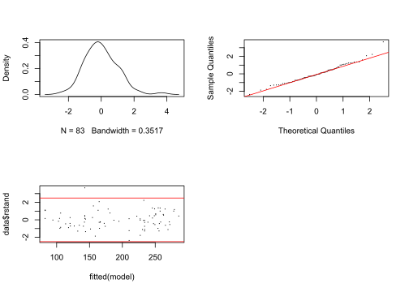
Das Programm library(performance) hat ebenfalls mehrere Funktionen, um zu überprüfen, ob die Bedingungen für die Durchführung der linearen Regression erfüllt sind:
library(performance)
model_parameters(m)## # Fixed Effects
##
## Parameter | Coefficient | SE | 95% CI | t(75) | p
## -------------------------------------------------------------------------
## (Intercept) | 256.86 | 13.70 | [ 229.56, 284.16] | 18.74 | < .001
## gender [M] | -108.55 | 17.56 | [-143.54, -73.56] | -6.18 | < .001
## attitude [pol] | -19.75 | 5.90 | [ -31.50, -8.01] | -3.35 | 0.001
##
## # Random Effects
##
## Parameter | Coefficient
## ---------------------------------------------------
## SD (Intercept: scenario) | 13.54
## SD (Intercept: subject) | 20.43
## SD (attitudepol: scenario) | 5.58
## Cor (Intercept~attitudepol: scenario) | 0.20
## SD (Residual) | 25.07model_performance(m)## # Indices of model performance
##
## AIC | BIC | R2 (cond.) | R2 (marg.) | ICC | RMSE | Sigma
## ---------------------------------------------------------------------
## 810.934 | 830.285 | 0.855 | 0.709 | 0.501 | 23.346 | 25.066check_normality(m)## OK: residuals appear as normally distributed (p = 0.109).check_heteroscedasticity(m)## Warning: Heteroscedasticity (non-constant error variance) detected (p < .001).check_collinearity(m)## # Check for Multicollinearity
##
## Low Correlation
##
## Term VIF Increased SE Tolerance
## gender 1.00 1.00 1.00
## attitude 1.00 1.00 1.00check_distribution(m)## # Distribution of Model Family
##
## Predicted Distribution of Residuals
##
## Distribution Probability
## normal 72%
## tweedie 12%
## gamma 9%
##
## Predicted Distribution of Response
##
## Distribution Probability
## lognormal 22%
## tweedie 22%
## weibull 12%# check_model(m)Überprüfung der Varianzhomogenität (für Regression ohne gemischte Effekte):
fligner.test(frequency ~ attitude, politeness)##
## Fligner-Killeen test of homogeneity of variances
##
## data: frequency by attitude
## Fligner-Killeen:med chi-squared = 0.21737, df = 1, p-value = 0.6411fligner.test(frequency ~ gender, politeness)##
## Fligner-Killeen test of homogeneity of variances
##
## data: frequency by gender
## Fligner-Killeen:med chi-squared = 0.7388, df = 1, p-value = 0.39Überprüfung auf Normalität der abhängigen Variable mit Hilfe eines statistischen Tests, der aber bei großen Stichproben nicht zuverlässig ist:
shapiro.test(politeness$frequency)##
## Shapiro-Wilk normality test
##
## data: politeness$frequency
## W = 0.94456, p-value = 0.001347Welcher Datenpunkt fehlt im Datensatz?
which(is.na(politeness$frequency)) ## [1] 39Entfernen des fehlenden Datenpunktes aus dem Datensatz:
# delete NA from data frame in row 39
polite1 <- politeness[-39,]Programmfunktion, die Ausreißer (outlier) im Datensatz feststellt und entfernt:
# Remove outliers
freqout <- romr.fnc(m, polite1, trim=2.5)## n.removed = 1
## percent.removed = 1.204819Anzahl der entfernten Ausreißer:
freqout$n.removed## [1] 1Anteil der entfernten Ausreißer:
freqout$percent.removed## [1] 1.204819Auswahl des neuen Datensatzes, aus dem die Ausreißer entfernt wurden:
freqout <- freqout$data
attach(freqout)Regression mit dem Datensatz, aus dem die Ausreißer entfernt wurden:
# update model
m <- lmer(frequency ~ gender + attitude +
(1|subject) + (1|scenario),
REML=F, data=freqout)
m01 <- m
summary(m)## Linear mixed model fit by maximum likelihood . t-tests use Satterthwaite's
## method [lmerModLmerTest]
## Formula: frequency ~ gender + attitude + (1 | subject) + (1 | scenario)
## Data: freqout
##
## AIC BIC logLik deviance df.resid
## 782.9 797.4 -385.5 770.9 76
##
## Scaled residuals:
## Min 1Q Median 3Q Max
## -2.50453 -0.54969 -0.04816 0.55710 2.73489
##
## Random effects:
## Groups Name Variance Std.Dev.
## scenario (Intercept) 207.0 14.39
## subject (Intercept) 417.6 20.44
## Residual 518.4 22.77
## Number of obs: 82, groups: scenario, 7; subject, 6
##
## Fixed effects:
## Estimate Std. Error df t value Pr(>|t|)
## (Intercept) 258.180 13.692 8.470 18.856 3.26e-08 ***
## genderM -111.184 17.431 5.940 -6.378 0.000726 ***
## attitudepol -22.389 5.043 70.028 -4.440 3.28e-05 ***
## ---
## Signif. codes: 0 '***' 0.001 '**' 0.01 '*' 0.05 '.' 0.1 ' ' 1
##
## Correlation of Fixed Effects:
## (Intr) gendrM
## genderM -0.637
## attitudepol -0.184 0.008library(jtools)
summ(m)| Observations | 82 |
| Dependent variable | frequency |
| Type | Mixed effects linear regression |
| AIC | 782.92 |
| BIC | 797.36 |
| Pseudo-R2 (fixed effects) | 0.74 |
| Pseudo-R2 (total) | 0.88 |
| Est. | S.E. | t val. | d.f. | p | |
|---|---|---|---|---|---|
| (Intercept) | 258.18 | 13.69 | 18.86 | 8.47 | 0.00 |
| genderM | -111.18 | 17.43 | -6.38 | 5.94 | 0.00 |
| attitudepol | -22.39 | 5.04 | -4.44 | 70.03 | 0.00 |
| p values calculated using Satterthwaite d.f. |
| Group | Parameter | Std. Dev. |
|---|---|---|
| scenario | (Intercept) | 14.39 |
| subject | (Intercept) | 20.44 |
| Residual | 22.77 |
| Group | # groups | ICC |
|---|---|---|
| scenario | 7 | 0.18 |
| subject | 6 | 0.37 |
Erneute Überprüfung der Varianzhomoskedastizität (Gleichförmigkeit der Varianz) und Normalität der Residuen (Abweichungen vom Mittelwert):
# Re-Check model asumptions
mcp.fnc(m)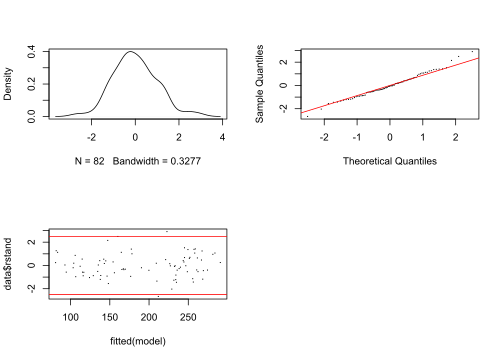
Andere Varianztests (vor allem für Regression ohne gemischte Effekte geeignet):
fligner.test(frequency ~ attitude, freqout)##
## Fligner-Killeen test of homogeneity of variances
##
## data: frequency by attitude
## Fligner-Killeen:med chi-squared = 0.34994, df = 1, p-value = 0.5541fligner.test(frequency ~ gender, freqout)##
## Fligner-Killeen test of homogeneity of variances
##
## data: frequency by gender
## Fligner-Killeen:med chi-squared = 0.25815, df = 1, p-value = 0.6114Normalitätstest (geeignet für kleinere Stichproben):
shapiro.test(freqout$frequency)##
## Shapiro-Wilk normality test
##
## data: freqout$frequency
## W = 0.9441, p-value = 0.001373politeness %>%
drop_na() %>%
group_by(gender, attitude) %>%
summarise(M = mean(frequency))## # A tibble: 4 x 3
## # Groups: gender [2]
## gender attitude M
## <chr> <chr> <dbl>
## 1 F inf 261.
## 2 F pol 233.
## 3 M inf 144.
## 4 M pol 133.